Lマギアレコード 魔法少女まどか☆マギカ外伝
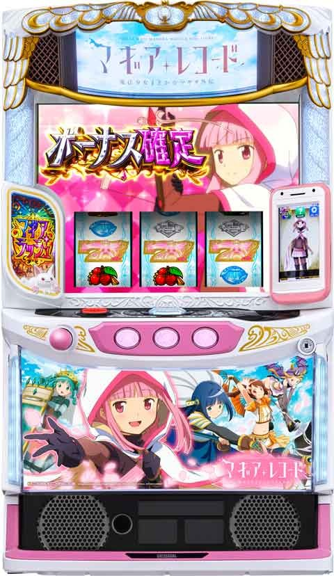
【天井情報】
950pt＋α ボーナス確定
リセット時 600〜699pt＋α
【リセット判別】
不明
【有利区間について】
差枚やエンディング等で有利区間をリセットした際は準備区間を経由して「エンブリオ・イブ覚醒」に突入!?
差枚2150枚前後でエンディング移行濃厚
有利区間切断条件 エンブリオイブ覚醒突入で切断濃厚（差枚問わず）
狙い目
状況に応じて様々な狙い目が存在します。
【リセット狙い】
- 260ptから※リセットによる内部的なポイント加算を想定
朝からAT未当選時のAT間天井狙い
4スルー AT間1200G以上 0ptから
5スルー AT間1000G以上 0ptから
※上記AT間の狙い目は0ptからになるため、ボーナス間が100ptハマっている毎にAT間のボーダーを50Gずつ下げる。
※設定変更後は穢れが溜まっていないためボーダーを高めにした方が良さそう。
【ゲーム数間天井狙い】
0スルー
- 520ptから
- 前回AT中の獲得枚数が150枚以下の場合：
350ptから - AT中の獲得枚数150枚以下 かつ 直近1200Gの差枚が-400枚以下の場合：
0ptから
1スルー
- 470ptから
2スルー
- AT間ハマリが900G以上の場合：
400ptから - 上記以外：
470ptから
3スルー
- AT間ハマリが1200G以上の場合：AT当選まで
- 上記以外：
400ptから
4スルー
- AT間ハマリが1000G以上の場合：AT当選まで
- みたまボーナスが4連続している場合：
0ptからAT当選まで - みたまボーナスが2回連続または履歴内に3回ある場合：
150ptから - 上記以外：
200ptから
5スルー
- 積極派：不問でAT当選まで
- 慎重派：
- AT間ハマリが700G以下の場合：
100ptからAT当選まで - AT間ハマリが701G以上の場合：不問でAT当選まで
- AT間ハマリが700G以下の場合：
- みたまボーナスが2連続以上または履歴内に3回以上ある場合：AT当選まで
6スルー
0ptからAT当選まで
【天井狙いの補足】
- 5スルー以上から期待値がかなり高くなる傾向があります。
- ボーナススルーが続いている台、または複数回REGが続いている台は、より甘くなる傾向があります。
- AT間のハマリが大きい（1000G以上）台は、多少「穢れ」が溜まっている可能性が高いです。
- AT駆け抜け後の0スルー台は、少し甘くなるようです。
【ゾーン狙い】
- 200ptゾーン：200ptから
- 400ptゾーン：400ptから
- ※ゾーンの強さは今後の解析や実践値によって変動する可能性があります。
【アイキャッチ狙い】
- 黒江モード示唆（強）：AT当選までを推奨。穢れが溜まりやすいため、ボーダーを大幅に下げて狙える可能性があります。
- ソウルジェムのアイキャッチ（黒背景）：出現後100pt+α、または次回前兆でのボーナス当選を示唆。
【穢れ狙い】
※穢れ解放演出無しで、穢れ解放されエピソードボーナスが出てくるケースあり。穢れ狙い時に穢れ解放タイミングでエピソードボーナスが出てきた時は解放されたとみなした方が良さそうです。
穢れが100pt蓄積した後のボーナスで、エピソードボーナスまたはアリナミュージアムに突入します。
- 蓄積量示唆「大」：穢れ解放まで続行。
- 蓄積量示唆「中」：残り時間などを考慮して押し引きを判断。
- 90pt以上溜まった状態で自力ATに当選した場合、AT終了後も続行を検討。
- 穢れはハマった際にまとまって獲得する傾向があるため、時間がない場合（残り5時間以内など）は一旦やめるのも選択肢の一つです。
画像参考元（YouTube: やさスロ）
- 穢れ獲得示唆：動画内
11:39- 穢れ蓄積示唆：動画内
12:51
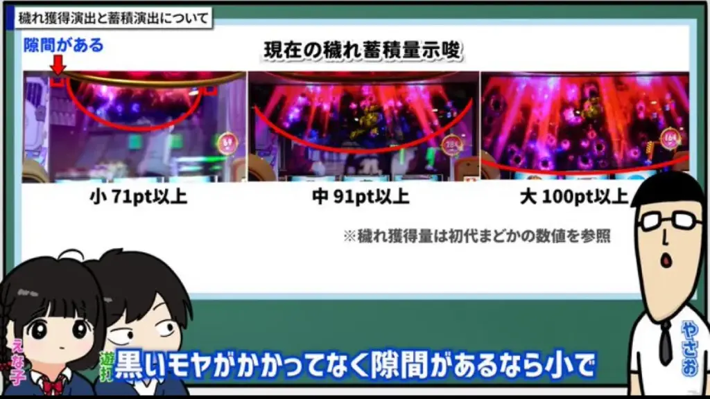
① 現在の穢れ蓄積(保持)量示唆
現在の穢れポイントがどれくらい溜まっているかを示唆する演出です。画面上部に発生するエフェクトの大きさで判断できます。
- 小（71pt以上）： 黒いモヤのようなエフェクトの間に隙間がある状態です。
- 中（91pt以上）： エフェクトが大きくなり、隙間がほとんどなくなります。
- 大（100pt以上）： エフェクトが画面上部全体を覆う最も大きい状態です。100pt蓄積で、次回のボーナスが特別な恩恵に変化します。
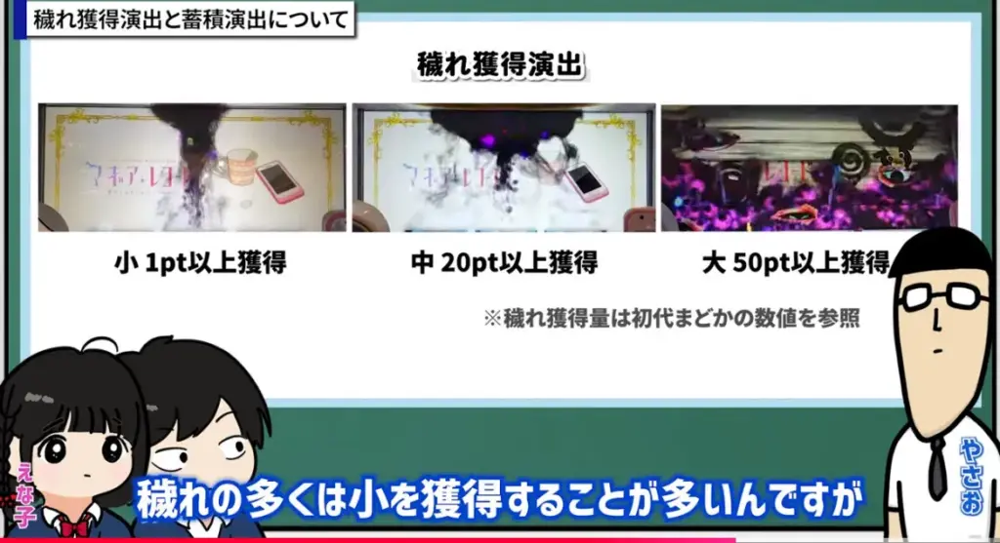
② 穢れ獲得時演出
穢れポイントを獲得した際に出現する可能性のある演出です。演出の強さで獲得したポイント量を示唆しています。
- 小（1pt以上獲得）： 画面に吸い込まれる小さな黒いモヤが発生します。穢れの多くは、この「小」の演出で獲得することが多いです。
- 中（20pt以上獲得）： 「画面に吸い込まれる小」よりも明らかに大きいモヤが発生します。
- 大（50pt以上獲得）： 画面を覆うほどの非常に大きなモヤ画面に吸い込まれる演出が発生します。
【有利区間関連狙い】
- 差枚+1900枚以上：ボーナス当選まで。
- 差枚+1500枚以上：AT引き戻しを確認（50G～60G程度）してやめ。
やめ時
- AT後・BIG後：基本的には即やめ。
- REG後：終了後の発展演出を確認してからやめ。
- 続行できる差枚の場合：有利区間状況に応じて続行。
- エンディング後：「エンブリオイブ覚醒」に突入するため消化。終了後は差枚に応じて続行判断。
- 本前兆中のCZ当選：ボーナスやAT終了後にCZが出現するため、本前兆中にスイカを引いた場合は即前兆の確認を推奨。
- AT後の引き戻し：引き戻し率は低いと見られるため、確認は基本的に不要と考えられます。
その他補足情報
穢れ獲得契機（大量獲得）
- AT間2000Gハマリ、またはそれ以降のボーナスでAT非当選時（推定50pt前後）
- 8スルー以降のボーナスでAT非当選時（30pt以上）
- みたまボーナスが「みかづき荘」のまま終了した場合（50ptまたは100pt）
- サブ液晶の黒セリフはほぼ100pt蓄積を示唆？！
- メイン液晶の黒セリフは100ptではないものの、相当量が溜まっている可能性が高いようです。
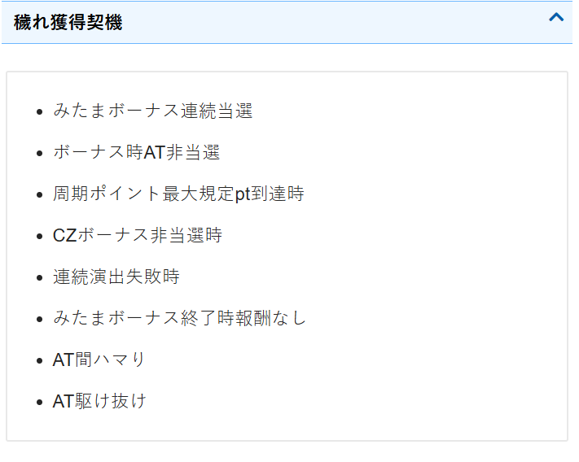
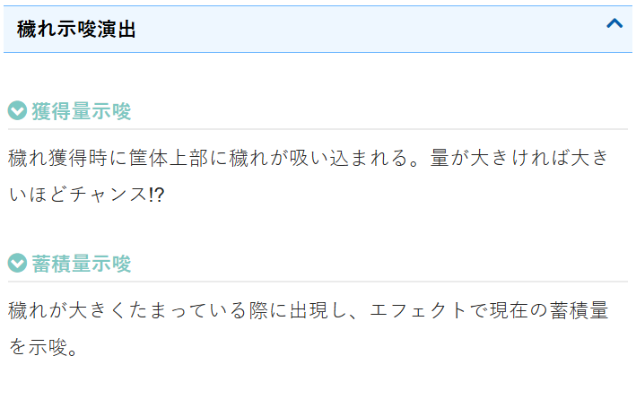
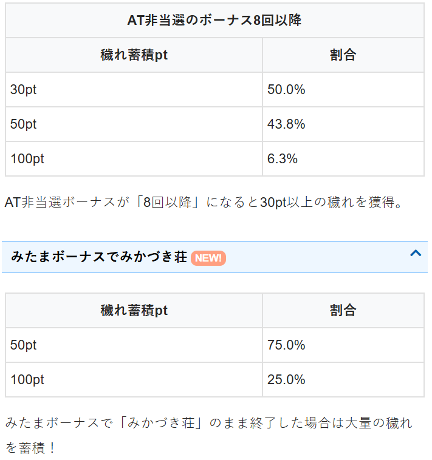
サブ液晶の黒セリフはほぼ100pt？、メイン液晶の黒セリフは100ptではないが相当溜まってそう？
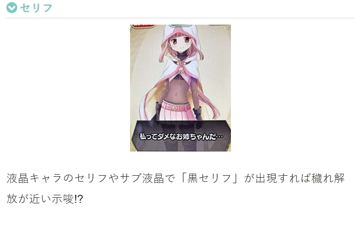
データ履歴の読み方
- BB 50枚以上：ビッグボーナス（主に70～130枚程度。下振れで50枚未満になる可能性あり）
- BB 130枚前後：エピソードボーナスの可能性あり（ビッグの獲得枚数にばらつきがあるため確定ではない）
- BB 50枚未満：みたまボーナス（主に30～40枚程度）
- 下記履歴、17:26ART 34G当選の履歴：「エンブリオ・イブ覚醒」突入の可能性があります。
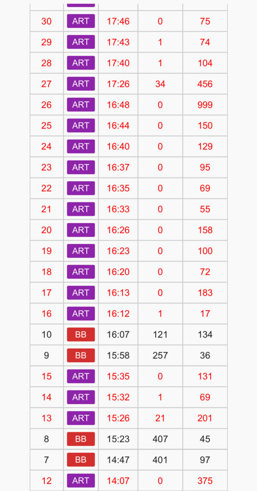
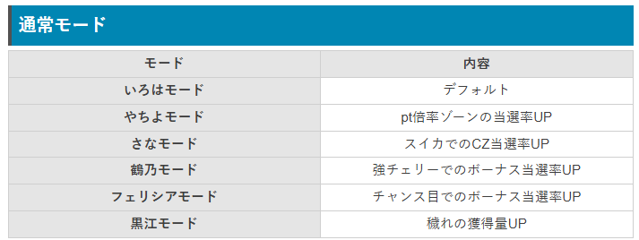
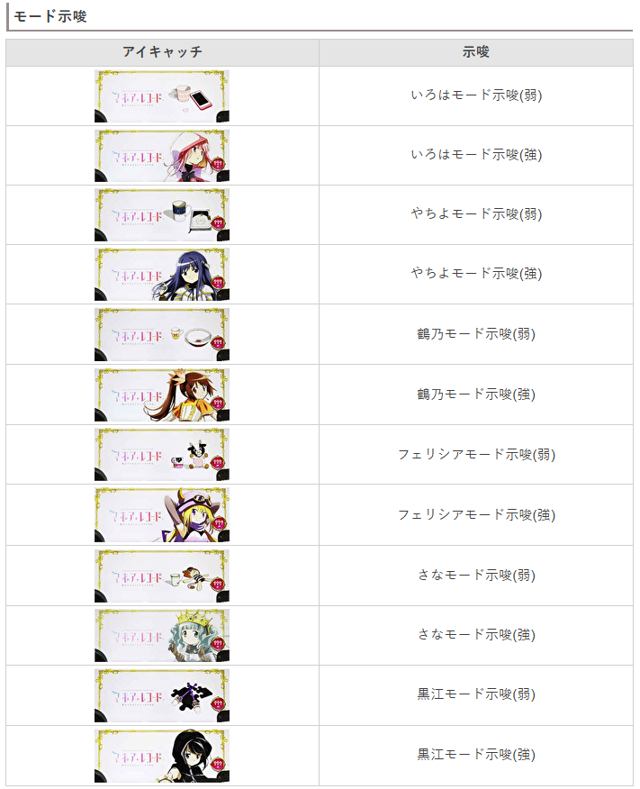
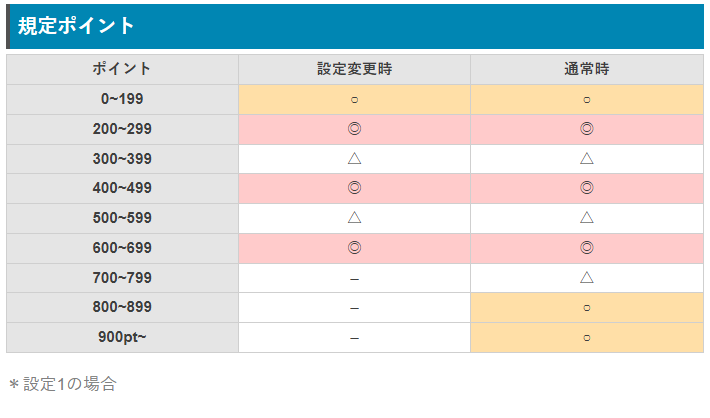
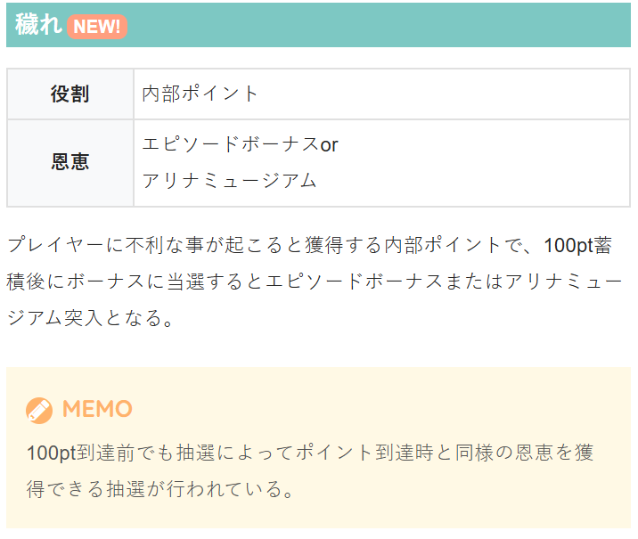
参考元
基本情報
- メーカー: ミズホ
- 機械割: 97.6% 〜 114.9%
- 導入開始日: 2025年04月07日（月）
- ゲーム性概要: ●初代『SLOT魔法少女まどか☆マギカ』を彷彿させるゲーム性 ●通常時はCZ・ゲーム数消化・レア役でボーナスを目指す ●初当りボーナス中にATを抽選 ●ATは純増約2.6枚/Gのゲーム数上乗せタイプ ●AT中のストーリーを8回分獲得すればエンブリオ・イブ覚醒へ


打ち方
打ち方・小役
打ち方（小役狙い）
「最初に狙う絵柄」 左リール上段付近にBARを狙う。スイカがスベってきた時のみ、中リールにスイカを狙おう。

「スイカ停止時」 中リールにBARを目安にスイカを狙う。右リールはこぼしがないのでフリー打ちでOKだ。

「レア役の停止形」

変則押しはNG
通常時、押し順ナビなし時は左リール第1停止での消化を推奨する。

中段チェリー
中段チェリーの恩恵

中段チェリーの恩恵
| 状態 | 内容 |
|---|---|
| 通常時 | エピソードボーナス、 約50%でロングフリーズが発生 |
| みたまボーナス中 | ドッペルモード突入 |
| BIG中 | AT濃厚かつドッペルモード突入 |
| AT中 | 上乗せ＋100G、 中段チェリー専用の数値でコネクトを獲得 |
解析情報通常時
小役関連
小役確率（弱チェリー以外）
| 役 | 確率 |
|---|---|
| リプレイ | 1/7.3 |
| 共通ベルA | 1/8.2 |
| 共通ベルB | 1/39.7 |
| スイカ | 1/79.9 |
| 強チェリー | 1/327.7 |
| チャンス目 | 1/256.0 |
弱チェリー確率
高設定ほど弱チェリー確率が高い。
［さなモード中］スイカのCZ当選率
| 設定 | マギアチャレンジ | 黒江チャレンジ | トータル |
|---|---|---|---|
| 不問 | 48.4% | 1.6% | 50.0% |
スイカ契機のCZ当選率は高設定ほど高い。さなモード中はスイカの1/2でCZに当選する。
［鶴乃orフェリシアモード以外］ 強レア役のボーナス当選率
| 役 | 通常中 | 高確中 |
|---|---|---|
| 強チェリー | 12.5% | 25.0% |
| チャンス目 | 10.2% | 20.3% |
［鶴乃orフェリシアモード］ 強レア役のボーナス当選率
| モード | 役 | 通常中 | 高確中 |
|---|---|---|---|
| 鶴乃 | 強チェリー | 50.0% | 80.1% |
| 鶴乃 | チャンス目 | 10.2% | 20.3% |
| フェリシア | 強チェリー | 12.5% | 25.0% |
| フェリシア | チャンス目 | 40.2% | 75.0% |
魔法少女モードが鶴乃の場合は強チェリー、フェリシアの場合はチャンス目でのボーナス当選率が大きく優遇される。
内部状態関連
高確移行率
有利区間移行時やAT終了後に内部状態を抽選。高確はゲーム数管理で、高確ゲーム数が0になると通常へ転落する。
［小役契機］高確移行率
| 役 | 高確 ＋10G | 高確 ＋20G | 高確 ＋30G | トータル 移行率 |
|---|---|---|---|---|
| 下記以外 | 0.4% | ー | ー | 0.4% |
| 弱チェリー | 12.5% | 16.4% | 4.7% | 33.6% |
高確中も小役契機の抽選はおこなわれ、当選時は高確ゲーム数が加算される。
［みたまボーナス終了時］高確移行率
| 設定 | 高確 ＋10G | 高確 ＋20G | 高確 ＋30G | トータル 移行率 |
|---|---|---|---|---|
| 全設定共通 | 50.0% | 43.8% | 6.3% | 100% |
みたまボーナス終了後は高確移行濃厚。みたまボーナスの報酬として獲得した前兆を消化中は、高確ゲーム数の減算がおこなわれない。
規定ポイント
規定ポイント概要
規定ポイントは有利区間移行時やボーナス・AT終了時に抽選。ポイントは液晶右側に表示されていて、1Gで最低1pt増え、規定ポイント到達でボーナスに当選する。 レア役成立時は大量加算のチャンスで、一定ゲーム数間、獲得ポイントが2倍〜10倍に増えることもある。

規定ポイント概要
| 項目 | 内容 |
|---|---|
| 加算契機 | 毎ゲーム最低1ptずつ加算、 レア役は大量加算のチャンス |
| その他 | 内部状態で加算期待度が変化、 加算ポイントが2倍～10倍になる可能性あり |
| 期待できるゾーン | 200pt、400pt、600pt |
ボーナス当選期待度の高いゾーン（設定1）
| ポイント | 設定変更時 | 設定変更時以外 |
|---|---|---|
| 1～199pt | ◯ | ◯ |
| 200～299pt | ◎ | ◎ |
| 300～399pt | △ | △ |
| 400～499pt | ◎ | ◎ |
| 500～599pt | △ | △ |
| 600～699pt | ◎ | ◎ |
| 700～799pt | ー | △ |
| 800～899pt | ー | ◯ |
| 900pt～ | ー | ◯ |
［ポイント倍増］ 5倍なら毎ゲーム5ptずつ加算。もちろん、レア役成立時のポイントも5倍になる。

ポイント加算抽選
通常時は成立役に応じてポイントの加算を抽選（1ゲームにつき最低1pt）。 おもに弱チェリー成立時にポイント倍増を抽選していて、当選時は10〜30G間、毎ゲームの抽選で獲得したポイント×当選した倍率分のポイントを獲得する。
獲得ポイント振り分け
| ポイント | 共通ベルB | リプレイ | 弱レア役 | 強レア役 |
|---|---|---|---|---|
| 1pt | ー | 93.8% | ー | ー |
| 3pt | 62.5% | 1.6% | ー | ー |
| 5pt | 25.0% | 1.6% | ー | ー |
| 10pt | 9.4% | 1.6% | 87.5% | ー |
| 20pt | 2.3% | 1.2% | 9.4% | 87.5% |
| 30pt | 0.4% | 0.4% | 2.3% | 9.4% |
| 50pt | 0.4% | ー | 0.4% | 2.3% |
| 100pt | ー | ー | 0.4% | 0.8% |
※共通ベルB…斜め揃いのベル ※上記以外の役（ハズレ含む）は1pt固定
［やちよモード以外］ポイント倍増当選率
| 倍率 | 通常中 | 高確中 | ||
|---|---|---|---|---|
| 倍率 | その他 | 弱チェリー | その他 | 弱チェリー |
| 1倍 | 100% | 87.5% | 97.3% | 59.0% |
| 2倍 | ー | 7.8% | 1.6% | 34.4% |
| 3倍 | ー | 3.1% | 0.8% | 4.7% |
| 5倍 | ー | 1.2% | 0.4% | 1.6% |
| 10倍 | ー | 0.4% | ー | 0.4% |
［やちよモード］ポイント倍増当選率
| 倍率 | 通常中 | 高確中 | ||
|---|---|---|---|---|
| 倍率 | その他 | 弱チェリー | その他 | 弱チェリー |
| 1倍 | 100% | 66.4% | 89.1% | 33.2% |
| 2倍 | ー | 22.7% | 6.3% | 44.9% |
| 3倍 | ー | 6.3% | 3.1% | 12.5% |
| 5倍 | ー | 3.1% | 1.6% | 6.3% |
| 10倍 | ー | 1.6% | ー | 3.1% |
すでに2倍以上の倍率に当選している場合、上位倍率への書き換え抽選などはされない。
ポイント倍増の継続ゲーム数振り分け
| ゲーム数 | その他 | 弱チェリー |
|---|---|---|
| 10G | 87.5% | 75.0% |
| 15G | 9.4% | 18.8% |
| 20G | 3.1% | 6.3% |
CZ
マギアチャレンジ概要
狙え発生時にBARが揃えばボーナス濃厚。カットインの規定回数は3回で、弱レア役成立時は必ず回数が1回分加算される。強レア役が成立すればボーナス濃厚だ。

マギアチャレンジ性能
| 項目 | 内容 |
|---|---|
| 当選契機 | スイカ成立時の抽選 |
| 規定ゲーム数 | 狙え3回＋α失敗まで |
| 成功期待度 | 約40% |
| 天井 | 30G消化でボーナス当選濃厚 |
| その他 | 弱レア役は狙えの回数加算濃厚、 強レア役はボーナス当選濃厚 |
「BARを狙え」 色は青＜緑＜赤＜虹の順にチャンス。

「狙え回数の加算」

黒江チャレンジ概要
突入した時点でボーナス濃厚、狙え→BAR揃いやレア役が成立すればエピソードボーナス当選濃厚となる。 突入契機はマギアチャレンジ本前兆中のスイカなので、スイカを連続して引いたら、黒江チャレンジに期待しよう。

黒江チャレンジ性能
| 項目 | 内容 |
|---|---|
| 当選契機 | マギアチャレンジ本前兆中のスイカ成立時の一部 |
| 規定ゲーム数 | 狙えカットイン3回失敗まで |
| 成功期待度 | 突入した時点でボーナス濃厚 BAR揃いやレア役はエピソードボーナス濃厚 |
| 天井 | 30G消化でエピソードボーナス当選濃厚 |
強レア役成立時はドッペルモード移行のチャンスだ。
「BARを狙え」 黒江チャレンジ中のカットインは青＜赤の2種類がある。

黒江チャレンジ成功時・ドッペルモード当選率
| 成功契機 | 当選率 |
|---|---|
| 下記以外 | 5.1% |
| 強レア役 | 25.0% |
穢れシステム
穢れシステム概要
プレイヤーにとって良くないことが起こると穢れが貯まり、100pt以上獲得後のボーナス当選で エピソードボーナスorアリナミュージアム に当選する。 CZ失敗後などに、液晶上部にエフェクトが吸い込まれると穢れ蓄積を示唆。穢れ解放時の一部でドッペルモードへ移行する可能性もある。

穢れの獲得契機一覧
| No. | 契機 |
|---|---|
| 1 | みたまボーナスの連続時 |
| 2 | ボーナスでATに非当選時 |
| 3 | 規定ポイント天井到達時 |
| 4 | CZ失敗時 |
| 5 | 連続演出失敗時 |
| 6 | みたまボーナス終了時に報酬非獲得時 |
| 7 | AT間のハマリゲーム数 |
| 8 | AT駆け抜け |
※魔法少女モードが黒江の場合は獲得数が大幅に優遇される
100pt貯めることが穢れ解放の条件だが、100pt未満の場合でもエピソードボーナスやアリナミュージアムに当選する可能性はある。
［蓄積示唆：小］

［蓄積示唆：中］

［蓄積示唆：大］ 穢れ示唆小は70pt以上、中は90pt以上、大は100pt以上蓄積濃厚だ。

AT非当選のボーナス8回目以降の穢れポイント振り分け
| ポイント | 振り分け |
|---|---|
| 30pt | 50.0% |
| 50pt | 43.8% |
| 100pt | 6.3% |
※100pt到達後のボーナス当選で穢れが解放
ボーナススルー以外にもさまざまな契機で穢れポイントを獲得するので、AT非当選のボーナスが続いている台は狙い目といえる。
みたまボーナスの報酬がみかづき荘時の 獲得穢れポイント振り分け
| ポイント | 振り分け |
|---|---|
| 50pt | 75.0% |
| 100pt | 25.0% |
みたまボーナスでの報酬がもっとも下のみかづき荘だった場合、50pt or 100ptの穢れポイントを獲得する。
穢れ解放時のボーナス振り分け
| 恩恵 | その他の ボーナス当選時 | AT濃厚の ボーナス（※）当選時 |
|---|---|---|
| エピソードボーナス | 93.4% | ー |
| エピソードボーナス ＋ドッペルモード | 0.4% | ー |
| アリナミュージアム | 5.9% | 50.0% |
| アリナミュージアム ＋ドッペルモード | 0.4% | 50.0% |
※黒江チャレンジ成功時（エピソードボーナス）やビッグ本前兆中のレア役でATにも当選した場合など
穢れがMAXにならなくても、ボーナス確定画面移行時の1/256で穢れ解放時と同じ恩恵を受けることが可能。この抽選に当選した場合、貯まっていた穢れはリセットされないが、演出は共通なので穢れMAXか否かを見た目で判別はできない。
また、ドッペルモードを獲得後の穢れ解放でエピソードボーナスやアリナミュージアムのみに当選しても、獲得済みのドッペルモードがなくなるわけではない。
魔法少女モード
魔法少女モード概要
通常時は 6種類の魔法少女モード が存在し、滞在しているモードによってさまざまな恩恵を得られる。 モードは有利区間移行時に決まり、基本的にAT当選まで同モードを維持。「いろはモード」中のみ、AT非当選のボーナス終了時にモード移行抽選がおこなわれる。 ステージチェンジ時のアイキャッチで、滞在中の魔法少女モードが示唆される。
魔法少女モード性能
| 項目 | 内容 |
|---|---|
| 抽選契機 | 有利区間移行時、AT終了時 |
| 効果 | 滞在モードに応じて変化 |
| その他 | いろはモード中は、 AT非当選のボーナス終了時にモードを再抽選 |
モードごとの効果
| モード | 効果 |
|---|---|
| いろはモード | デフォルト |
| やちよモード | ポイント倍率ゾーン当選率アップ |
| さなモード | スイカでのCZ当選率アップ |
| 鶴乃モード | 強チェリーでのボーナス当選率アップ |
| フェリシアモード | チャンス目でのボーナス当選率アップ |
| 黒江モード | 穢れの獲得量アップ |
魔法少女モードの示唆演出はコチラ
前兆
本前兆中の抽選
CZ・ボーナス・AT本前兆中のレア役では、報酬の昇格や報酬のストックが抽選される。

フリーズ
ロングフリーズ性能
| 項目 | 内容 |
|---|---|
| 発生契機 | 通常時の中段チェリーの約50% |
| 恩恵 | エピソードボーナス＋ドッペルモード |
解析情報ボーナス時
ビッグボーナス/みたまボーナス
ビッグボーナス概要
レア役などで高確ゲーム数を獲得し、高確中の狙え成功でAT当選を目指すゲーム性。4種類の楽曲と3種類の告知方法から、ボーナス開始時に任意で選択できる。

ビッグボーナス性能
| 項目 | 内容 |
|---|---|
| 当選契機 | 初当り時の一部 |
| 規定ゲーム数 | 30G＋α |
| 消化中の抽選 | レア役などで高確移行を抽選、 高確中の狙え成功でATに当選 |
「楽曲＆告知タイプ選択」

告知タイプの内容
| 告知タイプ | 内容 |
|---|---|
| チャンス告知 | 狙え発生でチャンス |
| 完全告知 | 金扉が閉まればAT濃厚 |
| 違和感告知 | 違和感発生でAT濃厚 |
リール右側のスマホ型液晶をタッチして、楽曲と告知タイプを選択できる。
［チャンス告知］

［完全告知］

みたまボーナス概要
ベルナビ8回で終了する、REG相当のボーナス。消化中はベルやレア役で報酬のランクアップを抽選していて、ラストに発展先（報酬）が告知される。

みたまボーナス性能
| 項目 | 内容 |
|---|---|
| 当選契機 | 初当り時の一部 |
| 継続ゲーム数 | ベルナビ8回で終了 |
| 消化中の抽選 | ベル・レア役で報酬のランクアップを抽選 |
［報酬ランクアップ］

［ルーレットで報酬を告知］

ビッグボーナス中の抽選
ビッグボーナス消化中は毎ゲームの成立役に応じて狙え高確への移行を抽選。高確中は小さいキュゥベえ揃い確率が大幅にアップする。 小さいキュゥベえが揃えばAT濃厚、AT確定後に小さいキュゥベえを揃えると決戦神浜聖女に当選する。
狙え高確当選率
| 役 | ＋5G | ＋10G | ＋20G | トータル |
|---|---|---|---|---|
| 下記以外 | 3.5% | ー | 0.4% | 3.9% |
| スイカ | 23.4% | 9.4% | 0.8% | 33.6% |
| 弱チェリー | 43.8% | 5.9% | 0.4% | 50.1% |
| 強レア役 | ー | 93.8% | 6.3% | 100% |
小さいキュゥベえ揃い確率
| 状態 | AT当選 | AT＋決戦神浜聖女 |
|---|---|---|
| 非高確 | ー | 1/3517.2 |
| 狙え高確 | 1/25.9 | ー |
※狙え高確中もAT確定後は決戦神浜聖女を獲得
低確率だが、非高確中でも小さいキュゥベえが揃う可能性あり。非高確中の場合は1回目でもAT＋決戦神浜聖女に当選する。
報酬レベルアップ当選率 レベル1時
| 役 | レベル2へ | レベル3へ |
|---|---|---|
| 下記以外 | 12.5% | ー |
| 押し順ベル | 33.6% | ー |
| 弱レア役 | 100% | ー |
| 強レア役 | ー | 100% |
レベル2時
| 役 | レベル3へ | レベル4へ |
|---|---|---|
| 下記以外 | 4.7% | ー |
| 押し順ベル | 16.8% | ー |
| 弱レア役 | 100% | ー |
| 強レア役 | 62.5% | 37.5% |
レベル3時
| 役 | レベル4へ | レベル5へ |
|---|---|---|
| 下記以外 | 1.6% | ー |
| 押し順ベル | 10.2% | ー |
| 弱レア役 | 75.0% | ー |
| 強レア役 | 75.0% | 25.0% |
レベル4時
| 役 | レベル5へ | レベル6へ |
|---|---|---|
| 下記以外 | 0.8% | ー |
| 押し順ベル | 5.1% | ー |
| 弱レア役 | 50.0% | ー |
| 強レア役 | 87.5% | 12.5% |
レベル5時
| 役 | レベル6へ |
|---|---|
| 下記以外 | 0.4% |
| 押し順ベル | 0.8% |
| 弱レア役 | 12.5% |
| 強レア役 | 100% |
※レベル2以上は見た目（報酬アイコン）と内部的な報酬レベルが完全リンクではない
みたまボーナス中は全役で報酬レベルアップを抽選。レベルは1〜6の6段階で、レベル6到達（AT当選濃厚）後はういチャンス抽選がおこなわれる。
報酬レベルごとの報酬振り分け レベル1時
| 役 | みかづき荘 | 発展 | 調整屋 | AT |
|---|---|---|---|---|
| 下記以外 | 100% | ー | ー | ー |
| 弱レア役 | 50.0% | ー | ー | 50.0% |
| 強レア役 | ー | ー | ー | 100% |
レベル2時
| 役 | みかづき荘 | 発展 | 調整屋 | AT |
|---|---|---|---|---|
| 下記以外 | ー | 100% | ー | ー |
| 弱レア役 | ー | ー | 100% | ー |
| 強レア役 | ー | ー | 93.8% | 6.3% |
レベル3時
| 役 | みかづき荘 | 発展 | 調整屋 | AT |
|---|---|---|---|---|
| 下記以外 | ー | 100% | ー | ー |
| 弱レア役 | ー | ー | 100% | ー |
| 強レア役 | ー | ー | 75.0% | 25.0% |
レベル4時
| 役 | みかづき荘 | 発展 | 調整屋 | AT |
|---|---|---|---|---|
| 下記以外 | ー | ー | 100% | ー |
| 弱レア役 | ー | ー | 25.0% | 75.0% |
| 強レア役 | ー | ー | ー | 100% |
レベル5時
| 役 | みかづき荘 | 発展 | 調整屋 | AT |
|---|---|---|---|---|
| 下記以外 | ー | ー | 100% | ー |
| 弱レア役 | ー | ー | ー | 100% |
| 強レア役 | ー | ー | ー | 100% |
※発展…ウワサバトル発展 ※報酬レベル6到達時はAT濃厚
報酬レベルと最終ゲームの成立役を参照して報酬を決定。レア役を引けばAT当選に期待できる。
調整屋選択時のAT当選率
| 報酬レベル | 当選率 |
|---|---|
| レベル2 | 33.2% |
| レベル3 | 50.0% |
| レベル4 | 16.8% |
| レベル5 | 75.0% |
発展（ウワサバトル）選択時は設定に応じてATの当否を抽選。調整屋選択時は全設定共通（報酬レベル）でATが抽選される。
エピソードボーナス/アリナミュージアム
エピソードボーナス概要

穢れ解放時や黒江チャレンジ成功時に突入するAT濃厚のボーナスで、消化中はレア役でATゲーム数の上乗せが抽選される。
エピソードは全7種類で、エピソードによって恩恵が変化。フリーズ発生時専用の「ういエピソード」やドッペルモード濃厚となる「いろはエピソード」も存在する。
エピソードボーナス性能
| 項目 | 内容 |
|---|---|
| 当選契機 | 穢れ解放時、黒江チャレンジ成功時など |
| 継続ゲーム数 | 50G |
| 消化中の抽選 | レア役でATゲーム数の上乗せを抽選 |
| その他 | 当選した時点でAT濃厚 |
アリナミュージアム概要
穢れ解放時の一部で突入する、上乗せ超特化ボーナス。30G間、毎ゲームATのゲーム数上乗せが発生するため超強力！ 『SLOT魔法少女まどか☆マギカ』の裏ボーナスに近い要素だ。


エピソードボーナスの振り分け
※ドッペルモード当選時はいろはエピソード、フリーズ時はういエピソード、黒江チャレンジ成功時は黒江エピソードが発生
レア役成立時の上乗せゲーム数振り分け
| 上乗せ | 弱レア役 | 強レア役 |
|---|---|---|
| ＋10G | 97.7% | ー |
| ＋20G | 1.6% | 93.8% |
| ＋30G | 0.4% | 5.5% |
| ＋50G | 0.4% | 0.8% |
小さいキュゥベえ揃い確率
| 設定 | 確率 |
|---|---|
| 全設定共通 | 1/135.3 |
レア役成立でゲーム数上乗せ濃厚。小さいキュゥベえ揃い時は決戦神浜聖女をストックする。
マギアアタック
マギアアタック概要
AT開始時は、基本的にマギアアタックで初期ゲーム数を決定。ガチャ演出で5枚のカードを引き、獲得した魔法少女の種類やレアリティによって上乗せ時の期待値が変化する。

マギアアタック性能
| 項目 | 内容 |
|---|---|
| 突入契機 | AT開始時 （ドッペルモード時を除く） |
| 継続ゲーム数 | 前半5G＋後半5G |
| 消化中の抽選 | 前半で5枚のカードを獲得し、 後半はカードと成立役で上乗せゲーム数を決定 |
「前半：ガチャパート（5G）」 ［導入演出］ 奥へ吸い込まれるイラストのパターンで、獲得するカードのレアリティを示唆。演出はアプリゲームのマギアレコードと同じ！

［獲得エフェクト］ 虹のエフェクトなら高レア濃厚！

［カードの色・マーク］ カードの色やマークで、どの属性のキャラを獲得したが示唆される（黄なら「いろは」や「まどか」、青なら「やちよ」や「さやか」など）。

「後半：攻撃アクションパート」 ［キャラごとに対応役が変化］ キャラごとに対応役が存在し、対応役を引けば大量上乗せのチャンス。同じキャラでもレアリティが高い場合、複数の対応役を持っているので上乗せ期待度が高い。 対応役はカードに表示されている。


属性ごとの対応役
| 属性 | 対応役 |
|---|---|
| 光 | 共通ベル |
| 水 | リプレイ |
| 火 | チェリー |
| 木 | スイカ |
| 闇 | チャンス目、小さいキュゥべえ揃い |
マギアアタック中の抽選内容まとめ
| タイミング | 抽選 |
|---|---|
| 開始時 | 5キャラ分の初期属性、初期キャラレベルを抽選 |
| ガチャ時 | 毎ゲームの成立役に応じて、 キャラレベルの昇格抽選 |
| 攻撃（上乗せ）時 | キャラの属性、キャラレベル、 成立役を参照して上乗せゲーム数を決定 |
カード種別ごと最低上乗せゲーム数
| カード | 光・水属性 | 火・木・闇属性 |
|---|---|---|
| ノーマルカード | 最低5G | 最低10G |
| 銀カード | 最低20G | 最低30G |
| 金カード | 最低30G （メイン対応役成立で100G以上） |
※ノーマルor銀カードは非対応役時の最低上乗せゲーム数
［開始時］属性振り分け
| 属性 | 振り分け |
|---|---|
| 光 | 40.6% |
| 水 | 40.6% |
| 火 | 6.3% |
| 木 | 6.3% |
| 闇 | 6.3% |
基本的には光と水属性のキャラが選択。火・木・闇属性は選ばれにくい代わりに、上乗せ性能がやや高い。
［開始時］キャラレベル振り分け
| キャラレベル | 光・水属性 | 火・木・闇属性 |
|---|---|---|
| レベル1 | 96.1% | ー |
| レベル2 | 0.4% | 98.0% |
| レベル3 | 0.4% | 0.4% |
| レベル4 | 2.7% | 1.2% |
| レベル5 | 0.4% | 0.4% |
上記抽選でキャラレベルが決まった後、どれか1人のキャラに対してレベル3以上への昇格を抽選。この抽選があることで、最低でも1人以上はキャラレベル3（＋20G）以上のキャラを獲得できる。
［開始時］キャラレベル昇格振り分け
| キャラレベル | 振り分け |
|---|---|
| レベル3へ | 79.7% |
| レベル4へ | 19.9% |
| レベル5へ | 0.4% |
※どれか1人に対して抽選を実施
［ガチャ時］レア役によるキャラレベル昇格段階振り分け 弱レア役成立時
| 現在のキャラレベル | レベル1アップ | レベル2アップ |
|---|---|---|
| レベル1時 | 50.0% | 50.0% |
| レベル2時 | 87.5% | 12.5% |
| レベル3時 | 87.5% | 12.5% |
| レベル4時 | 87.5% | 12.5% |
| レベル5時 | 87.5% | 12.5% |
強レア役成立時
| 現在のキャラレベル | レベル2アップ | レベル3アップ |
|---|---|---|
| レベル1時 | 50.0% | 50.0% |
| レベル2時 | 87.5% | 12.5% |
| レベル3時 | 87.5% | 12.5% |
| レベル4時 | 87.5% | 12.5% |
| レベル5時 | 100% | ー |
ここまでの抽選によって、出現するカード（キャラレベル）を決定。全カードが出揃った次ゲームから、カードと成立役を参照したゲーム数上乗せ抽選がおこなわれる。
「ゲーム数上乗せ抽選の解説」 キャラレベル・属性・成立役を参照して当該カードの上乗せゲーム数を決定。各カードの対応役を引けば上乗せが優遇される。 対応役以外を引いた場合の一部で小さいキュゥベえが揃うことがあり、揃った場合は非対応役だが、強レア役が成立したものとして上乗せを抽選する。
キャラレベルごとの最低上乗せゲーム数
| キャラレベル | 最低上乗せ |
|---|---|
| レベル1 | 5G |
| レベル2 | 10G |
| レベル3 | 20G |
| レベル4 | 30G |
| レベル5 | 30G |
| レベル6 | 50G |
| レベル7 | 100G |
［攻撃時］ 非対応役成立時の小さいキュゥベえ揃いへの変換当選率
| 役 | 当選率 |
|---|---|
| 非対応役 | 12.5% |
非対応役成立時・属性ごとの小さいキュゥベえが揃うライン
| 属性 | ライン |
|---|---|
| 光 | 斜め揃い |
| 水 | 中段揃い |
| 火 | 斜めor中段揃い |
| 木 | 斜めor中段揃い |
| 闇 | 対応役のため非対応役時の出現ナシ |
光属性 ・成立役ごとの上乗せゲーム数振り分け キャラレベル1
| 上乗せ | 共通ベル | 非対応 弱レア役 | 非対応 強レア役 | リプレイ | 押し順ベル ハズレ |
|---|---|---|---|---|---|
| ＋5G | ー | ー | ー | 100% | 100% |
| ＋10G | ー | ー | ー | ー | ー |
| ＋20G | 87.5% | 75.0% | ー | ー | ー |
| ＋30G | 11.7% | 25.0% | 87.5% | ー | ー |
| ＋50G | 0.8% | ー | 12.5% | ー | ー |
| ＋100G | ー | ー | ー | ー | ー |
キャラレベル2
| 上乗せ | 共通ベル | 非対応 弱レア役 | 非対応 強レア役 | リプレイ | 押し順ベル ハズレ |
|---|---|---|---|---|---|
| ＋10G | ー | ー | ー | 100% | 100% |
| ＋20G | ー | ー | ー | ー | ー |
| ＋30G | 87.5% | 93.8% | 75.0% | ー | ー |
| ＋50G | 11.7% | 6.3% | 18.8% | ー | ー |
| ＋100G | 0.8% | ー | 6.3% | ー | ー |
キャラレベル3
| 上乗せ | 共通ベル | 非対応 弱レア役 | 非対応 強レア役 | リプレイ | 押し順ベル ハズレ |
|---|---|---|---|---|---|
| ＋20G | ー | ー | ー | 100% | 100% |
| ＋30G | ー | ー | ー | ー | ー |
| ＋50G | 87.5% | 93.8% | 50.0% | ー | ー |
| ＋100G | 11.7% | 6.3% | 37.5% | ー | ー |
| ＋150G | 0.8% | ー | 12.5% | ー | ー |
キャラレベル4
| 上乗せ | 共通ベル | 非対応 弱レア役 | 非対応 強レア役 | リプレイ | 押し順ベル ハズレ |
|---|---|---|---|---|---|
| ＋30G | ー | ー | ー | ー | 100% |
| ＋50G | ー | ー | ー | 87.5% | ー |
| ＋100G | 50.0% | 87.5% | 50.0% | 10.9% | ー |
| ＋150G | 25.0% | 12.5% | 25.0% | 1.6% | ー |
| ＋200G | 25.0% | ー | 25.0% | ー | ー |
キャラレベル5
| 上乗せ | 共通ベル | 非対応 弱レア役 | 非対応 強レア役 | リプレイ | 押し順ベル ハズレ |
|---|---|---|---|---|---|
| ＋30G | ー | ー | ー | ー | 100% |
| ＋50G | ー | ー | ー | ー | ー |
| ＋100G | ー | ー | ー | 87.5% | ー |
| ＋150G | 50.0% | 87.5% | 50.0% | 10.9% | ー |
| ＋200G | 25.0% | 12.5% | 25.0% | 1.6% | ー |
| ＋300G | 25.0% | ー | 25.0% | ー | ー |
キャラレベル6
| 上乗せ | 共通ベル | 非対応 弱レア役 | 非対応 強レア役 | リプレイ | 押し順ベル ハズレ |
|---|---|---|---|---|---|
| ＋50G | ー | ー | ー | ー | 100% |
| ＋100G | ー | ー | ー | ー | ー |
| ＋150G | ー | ー | ー | 87.5% | ー |
| ＋200G | 50.0% | 87.5% | 50.0% | 10.9% | ー |
| ＋300G | 50.0% | 12.5% | 50.0% | 1.6% | ー |
キャラレベル7
| 上乗せ | 共通ベル | 非対応 弱レア役 | 非対応 強レア役 | リプレイ | 押し順ベル ハズレ |
|---|---|---|---|---|---|
| ＋100G | ー | ー | ー | ー | 100% |
| ＋150G | ー | ー | ー | ー | ー |
| ＋200G | ー | ー | ー | 87.5% | ー |
| ＋300G | 100% | 100% | 100% | 12.5% | ー |
水属性 ・成立役ごとの上乗せゲーム数振り分け キャラレベル1
| 上乗せ | リプレイ | 非対応 弱レア役 | 非対応 強レア役 | 共通ベル | 押し順ベル ハズレ |
|---|---|---|---|---|---|
| ＋5G | ー | ー | ー | 100% | 100% |
| ＋10G | ー | ー | ー | ー | ー |
| ＋20G | 87.5% | 75.0% | ー | ー | ー |
| ＋30G | 11.7% | 25.0% | 87.5% | ー | ー |
| ＋50G | 0.8% | ー | 12.5% | ー | ー |
キャラレベル2
| 上乗せ | リプレイ | 非対応 弱レア役 | 非対応 強レア役 | 共通ベル | 押し順ベル ハズレ |
|---|---|---|---|---|---|
| ＋10G | ー | ー | ー | 100% | 100% |
| ＋20G | ー | ー | ー | ー | ー |
| ＋30G | 87.5% | 93.8% | 75.0% | ー | ー |
| ＋50G | 11.7% | 6.3% | 18.8% | ー | ー |
| ＋100G | 0.8% | ー | 6.3% | ー | ー |
キャラレベル3
| 上乗せ | リプレイ | 非対応 弱レア役 | 非対応 強レア役 | 共通ベル | 押し順ベル ハズレ |
|---|---|---|---|---|---|
| ＋20G | ー | ー | ー | 100% | 100% |
| ＋30G | ー | ー | ー | ー | ー |
| ＋50G | 87.5% | 93.8% | 50.0% | ー | ー |
| ＋100G | 11.7% | 6.3% | 37.5% | ー | ー |
| ＋150G | 0.8% | ー | 12.5% | ー | ー |
キャラレベル4
| 上乗せ | リプレイ | 非対応 弱レア役 | 非対応 強レア役 | 共通ベル | 押し順ベル ハズレ |
|---|---|---|---|---|---|
| ＋30G | ー | ー | ー | ー | 100% |
| ＋50G | ー | ー | ー | 87.5% | ー |
| ＋100G | 75.0% | 87.5% | 50.0% | 10.9% | ー |
| ＋150G | 18.8% | 12.5% | 25.0% | 1.6% | ー |
| ＋200G | 6.3% | ー | 25.0% | ー | ー |
キャラレベル5
| 上乗せ | リプレイ | 非対応 弱レア役 | 非対応 強レア役 | 共通ベル | 押し順ベル ハズレ |
|---|---|---|---|---|---|
| ＋30G | ー | ー | ー | ー | 100% |
| ＋50G | ー | ー | ー | ー | ー |
| ＋100G | ー | ー | ー | 87.5% | ー |
| ＋150G | 75.0% | 87.5% | 50.0% | 10.9% | ー |
| ＋200G | 18.8% | 12.5% | 25.0% | 1.6% | ー |
| ＋300G | 6.3% | ー | 25.0% | ー | ー |
キャラレベル6
| 上乗せ | リプレイ | 非対応 弱レア役 | 非対応 強レア役 | 共通ベル | 押し順ベル ハズレ |
|---|---|---|---|---|---|
| ＋50G | ー | ー | ー | ー | 100% |
| ＋100G | ー | ー | ー | ー | ー |
| ＋150G | ー | ー | ー | 87.5% | ー |
| ＋200G | 75.0% | 87.5% | 50.0% | 10.9% | ー |
| ＋300G | 25.0% | 12.5% | 50.0% | 1.6% | ー |
キャラレベル7
| 上乗せ | リプレイ | 非対応 弱レア役 | 非対応 強レア役 | 共通ベル | 押し順ベル ハズレ |
|---|---|---|---|---|---|
| ＋100G | ー | ー | ー | ー | 100% |
| ＋150G | ー | ー | ー | ー | ー |
| ＋200G | ー | ー | ー | 87.5% | ー |
| ＋300G | 100% | 100% | 100% | 12.5% | ー |
火属性 ・成立役ごとの上乗せゲーム数振り分け キャラレベル2
| 上乗せ | リプレイ 共通ベル | 弱チェリー | 強チェリー |
|---|---|---|---|
| ＋10G | 100% | ー | ー |
| ＋20G | ー | ー | ー |
| ＋30G | ー | ー | ー |
| ＋50G | ー | 50.0% | ー |
| ＋100G | ー | 37.5% | 75.0% |
| ＋150G | ー | 12.5% | 25.0% |
| 上乗せ | 非対応弱レア役 | 非対応強レア役 | 押し順ベル ハズレ |
| ＋10G | ー | ー | 100% |
| ＋20G | ー | ー | ー |
| ＋30G | 75.0% | ー | ー |
| ＋50G | 18.8% | 75.0% | ー |
| ＋100G | 6.3% | 18.8% | ー |
| ＋150G | ー | 6.3% | ー |
キャラレベル3
| 上乗せ | リプレイ 共通ベル | 弱チェリー | 強チェリー |
|---|---|---|---|
| ＋20G | 100% | ー | ー |
| ＋30G | ー | ー | ー |
| ＋50G | ー | ー | ー |
| ＋100G | ー | 50.0% | ー |
| ＋150G | ー | 37.5% | 75.0% |
| ＋200G | 12.5% | 25.0% | |
| 上乗せ | 非対応弱レア役 | 非対応強レア役 | 押し順ベル ハズレ |
| ＋20G | ー | ー | 100% |
| ＋30G | ー | ー | ー |
| ＋50G | ー | ー | ー |
| ＋100G | 93.8% | 50.0% | ー |
| ＋150G | 6.3% | 37.5% | ー |
| ＋200G | ー | 12.5% | ー |
キャラレベル4
| 上乗せ | リプレイ 共通ベル | 弱チェリー | 強チェリー |
|---|---|---|---|
| ＋30G | ー | ー | ー |
| ＋50G | ー | ー | ー |
| ＋100G | 87.5% | 50.0% | ー |
| ＋150G | 10.9% | 25.0% | 50.0% |
| ＋200G | 1.6% | 18.8% | 25.0% |
| ＋300G | ー | 6.3% | 25.0% |
| 上乗せ | 非対応弱レア役 | 非対応強レア役 | 押し順ベル ハズレ |
| ＋30G | ー | ー | 100% |
| ＋50G | ー | ー | ー |
| ＋100G | 50.0% | ー | ー |
| ＋150G | 25.0% | 50.0% | ー |
| ＋200G | 25.0% | 25.0% | ー |
| ＋300G | ー | 25.0% |
キャラレベル5
| 上乗せ | リプレイ 共通ベル | 弱チェリー | 強チェリー |
|---|---|---|---|
| ＋30G | ー | ー | ー |
| ＋50G | ー | ー | ー |
| ＋100G | ー | ー | ー |
| ＋150G | 87.5% | 50.0% | ー |
| ＋200G | 10.9% | 25.0% | 50.0% |
| ＋300G | 1.6% | 25.0% | 50.0% |
| 上乗せ | 非対応弱レア役 | 非対応強レア役 | 押し順ベル ハズレ |
| ＋30G | ー | ー | 100% |
| ＋50G | ー | ー | ー |
| ＋100G | ー | ー | ー |
| ＋150G | 50.0% | ー | ー |
| ＋200G | 25.0% | 50.0% | ー |
| ＋300G | 25.0% | 50.0% | ー |
キャラレベル6
| 上乗せ | リプレイ 共通ベル | 弱チェリー | 強チェリー |
|---|---|---|---|
| ＋50G | ー | ー | ー |
| ＋100G | ー | ー | ー |
| ＋150G | ー | ー | ー |
| ＋200G | 87.5% | 50.0% | ー |
| ＋300G | 12.5% | 50.0% | 100% |
| 上乗せ | 非対応弱レア役 | 非対応強レア役 | 押し順ベル ハズレ |
| ＋50G | ー | ー | 100% |
| ＋100G | ー | ー | ー |
| ＋150G | ー | ー | ー |
| ＋200G | 50.0% | ー | ー |
| ＋300G | 50.0% | 100% | ー |
キャラレベル7
| 上乗せ | リプレイ 共通ベル | 弱チェリー | 強チェリー |
|---|---|---|---|
| ＋100G | ー | ー | ー |
| ＋150G | ー | ー | ー |
| ＋200G | ー | ー | ー |
| ＋300G | 100% | 100% | 100% |
| 上乗せ | 非対応弱レア役 | 非対応強レア役 | 押し順ベル ハズレ |
| ＋100G | ー | ー | 100% |
| ＋150G | ー | ー | ー |
| ＋200G | ー | ー | ー |
| ＋300G | 100% | 100% | ー |
木属性 ・成立役ごとの上乗せゲーム数振り分け キャラレベル2
| 上乗せ | リプレイ 共通ベル | スイカ | 非対応弱レア役 | |
|---|---|---|---|---|
| ＋10G | 100% | ー | ー | |
| ＋20G | ー | ー | ー | |
| ＋30G | ー | ー | 75.0% | |
| ＋50G | ー | 50.0% | 18.8% | |
| ＋100G | ー | 25.0% | 6.3% | |
| ＋150G | ー | 25.0% | ー | |
| 上乗せ | 非対応強レア役 | 押し順ベル・ハズレ | ||
| ＋10G | ー | 100% | ||
| ＋20G | ー | ー | ||
| ＋30G | ー | ー | ||
| ＋50G | 75.0% | ー | ||
| ＋100G | 18.8% | ー | ||
| ＋150G | 6.3% | ー |
キャラレベル3
| 上乗せ | リプレイ 共通ベル | スイカ | 非対応弱レア役 | |
|---|---|---|---|---|
| ＋20G | 100% | ー | ー | |
| ＋30G | ー | ー | ー | |
| ＋50G | ー | ー | ー | |
| ＋100G | ー | 50.0% | 93.8% | |
| ＋150G | ー | 37.5% | 6.3% | |
| ＋200G | 12.5% | ー | ||
| 上乗せ | 非対応強レア役 | 押し順ベル・ハズレ | ||
| ＋20G | ー | 100% | ||
| ＋30G | ー | ー | ||
| ＋50G | ー | ー | ||
| ＋100G | 50.0% | ー | ||
| ＋150G | 37.5% | ー | ||
| ＋200G | 12.5% | ー |
キャラレベル4
| 上乗せ | リプレイ 共通ベル | スイカ | 非対応弱レア役 | |
|---|---|---|---|---|
| ＋30G | ー | ー | ー | |
| ＋50G | ー | ー | ー | |
| ＋100G | 87.5% | 50.0% | 50.0% | |
| ＋150G | 10.9% | 25.0% | 25.0% | |
| ＋200G | 1.6% | 18.8% | 25.0% | |
| ＋300G | ー | 6.3% | ー | |
| 上乗せ | 非対応強レア役 | 押し順ベル・ハズレ | ||
| ＋30G | ー | 100% | ||
| ＋50G | ー | ー | ||
| ＋100G | ー | ー | ||
| ＋150G | 50.0% | ー | ||
| ＋200G | 25.0% | ー | ||
| ＋300G | 25.0% | ー |
キャラレベル5
| 上乗せ | リプレイ 共通ベル | スイカ | 非対応弱レア役 | |
|---|---|---|---|---|
| ＋30G | ー | ー | ー | |
| ＋50G | ー | ー | ー | |
| ＋100G | ー | ー | ー | |
| ＋150G | 87.5% | 50.0% | 50.0% | |
| ＋200G | 10.9% | 25.0% | 25.0% | |
| ＋300G | 1.6% | 25.0% | 25.0% | |
| 上乗せ | 非対応強レア役 | 押し順ベル・ハズレ | ||
| ＋30G | ー | 100% | ||
| ＋50G | ー | ー | ||
| ＋100G | ー | ー | ||
| ＋150G | ー | ー | ||
| ＋200G | 50.0% | ー | ||
| ＋300G | 50.0% | ー |
キャラレベル6
| 上乗せ | リプレイ 共通ベル | スイカ | 非対応弱レア役 | |
|---|---|---|---|---|
| ＋50G | ー | ー | ー | |
| ＋100G | ー | ー | ー | |
| ＋150G | ー | ー | ー | |
| ＋200G | 87.5% | 50.0% | 50.0% | |
| ＋300G | 12.5% | 50.0% | 50.0% | |
| 上乗せ | 非対応強レア役 | 押し順ベル・ハズレ | ||
| ＋50G | ー | 100% | ||
| ＋100G | ー | ー | ||
| ＋150G | ー | ー | ||
| ＋200G | ー | ー | ||
| ＋300G | 100% | ー |
キャラレベル7
| 上乗せ | リプレイ 共通ベル | スイカ | 非対応弱レア役 | |
|---|---|---|---|---|
| ＋100G | ー | ー | ー | |
| ＋150G | ー | ー | ー | |
| ＋200G | ー | ー | ー | |
| ＋300G | 100% | 100% | 100% | |
| 上乗せ | 非対応強レア役 | 押し順ベル・ハズレ | ||
| ＋100G | ー | 100% | ||
| ＋150G | ー | ー | ||
| ＋200G | ー | ー | ||
| ＋300G | 100% | ー |
闇属性 ・成立役ごとの上乗せゲーム数振り分け キャラレベル2
| 上乗せ | リプレイ 共通ベル | チャンス目 | 小さい キュゥべえ揃い |
|---|---|---|---|
| ＋10G | 100% | ー | ー |
| ＋20G | ー | ー | ー |
| ＋30G | ー | ー | ー |
| ＋50G | ー | ー | 75.0% |
| ＋100G | ー | 75.0% | 18.8% |
| ＋150G | ー | 25.0% | 6.3% |
| 上乗せ | 非対応弱レア役 | 非対応強レア役 | 押し順ベル ハズレ |
| ＋10G | ー | ー | 100% |
| ＋20G | ー | ー | ー |
| ＋30G | 75.0% | ー | ー |
| ＋50G | 18.8% | 75.0% | ー |
| ＋100G | 6.3% | 18.8% | ー |
| ＋150G | ー | 6.3% | ー |
キャラレベル3
| 上乗せ | リプレイ 共通ベル | チャンス目 | 小さい キュゥべえ揃い |
|---|---|---|---|
| ＋20G | 100% | ー | ー |
| ＋30G | ー | ー | ー |
| ＋50G | ー | ー | ー |
| ＋100G | ー | 50.0% | 50.0% |
| ＋150G | ー | 25.0% | 37.5% |
| ＋200G | 25.0% | 12.5% | |
| 上乗せ | 非対応弱レア役 | 非対応強レア役 | 押し順ベル ハズレ |
| ＋20G | ー | ー | 100% |
| ＋30G | ー | ー | ー |
| ＋50G | ー | ー | ー |
| ＋100G | 93.8% | 50.0% | ー |
| ＋150G | 6.3% | 37.5% | ー |
| ＋200G | ー | 12.5% | ー |
キャラレベル4
| 上乗せ | リプレイ 共通ベル | チャンス目 | 小さい キュゥべえ揃い |
|---|---|---|---|
| ＋30G | ー | ー | ー |
| ＋50G | ー | ー | ー |
| ＋100G | 87.5% | ー | ー |
| ＋150G | 10.9% | 50.0% | 50.0% |
| ＋200G | 1.6% | 25.0% | 25.0% |
| ＋300G | 25.0% | 25.0% | |
| 上乗せ | 非対応弱レア役 | 非対応強レア役 | 押し順ベル ハズレ |
| ＋30G | ー | ー | 100% |
| ＋50G | ー | ー | ー |
| ＋100G | 50.0% | ー | ー |
| ＋150G | 25.0% | 50.0% | ー |
| ＋200G | 25.0% | 25.0% | ー |
| ＋300G | ー | 25.0% |
キャラレベル5
| 上乗せ | リプレイ 共通ベル | チャンス目 | 小さい キュゥべえ揃い |
|---|---|---|---|
| ＋30G | ー | ー | ー |
| ＋50G | ー | ー | ー |
| ＋100G | ー | ー | ー |
| ＋150G | 87.5% | ー | ー |
| ＋200G | 10.9% | 50.0% | 50.0% |
| ＋300G | 1.6% | 50.0% | 50.0% |
| 上乗せ | 非対応弱レア役 | 非対応強レア役 | 押し順ベル ハズレ |
| ＋30G | ー | ー | 100% |
| ＋50G | ー | ー | ー |
| ＋100G | ー | ー | ー |
| ＋150G | 50.0% | ー | ー |
| ＋200G | 25.0% | 50.0% | ー |
| ＋300G | 25.0% | 50.0% | ー |
キャラレベル6
| 上乗せ | リプレイ 共通ベル | チャンス目 | 小さい キュゥべえ揃い |
|---|---|---|---|
| ＋50G | ー | ー | ー |
| ＋100G | ー | ー | ー |
| ＋150G | ー | ー | ー |
| ＋200G | 87.5% | ー | ー |
| ＋300G | 12.5% | 100% | 100% |
| 上乗せ | 非対応弱レア役 | 非対応強レア役 | 押し順ベル ハズレ |
| ＋50G | ー | ー | 100% |
| ＋100G | ー | ー | ー |
| ＋150G | ー | ー | ー |
| ＋200G | 50.0% | ー | ー |
| ＋300G | 50.0% | 100% | ー |
キャラレベル7
| 上乗せ | リプレイ 共通ベル | チャンス目 | 小さい キュゥべえ揃い |
|---|---|---|---|
| ＋100G | ー | ー | ー |
| ＋150G | ー | ー | ー |
| ＋200G | ー | ー | ー |
| ＋300G | 100% | 100% | 100% |
| 上乗せ | 非対応弱レア役 | 非対応強レア役 | 押し順ベル ハズレ |
| ＋100G | ー | ー | 100% |
| ＋150G | ー | ー | ー |
| ＋200G | ー | ー | ー |
| ＋300G | 100% | 100% | ー |
マギアラッシュ（AT）
マギアラッシュ概要
ゲーム数管理型のATで、消化中はレア役での直乗せのほかに、ストーリー・決戦神浜聖女・マギアボーナスなど、さまざまな上乗せ契機を抽選する。 AT中に目指すのは全8種あるストーリーのコンプリート。 コンプリート成功でエンブリオ・イブ覚醒の権利 を獲得できる。

マギアラッシュ性能
| 項目 | 内容 |
|---|---|
| 初期ゲーム数 | マギアアタックで決定 |
| 1Gあたりの純増 | 約2.6枚 |
| 消化中の抽選 | ゲーム数上乗せ、ストーリー、 決戦神浜聖女、マギアボーナス |
「直乗せ」 直乗せは基本的にレア役で獲得する。

「規定ゲーム数消化での抽選」 AT中はゲーム数消化でもマギウスバトルの抽選がおこなわれていて、ステージが変化すれば前兆の合図。レア役契機の場合も、基本的にはステージが昇格していき、マギウスバトルの当落を示唆する。
マギウスバトル
AT中の連続演出の総称がマギウスバトル。レア役での抽選だけでなく、規定ゲーム数消化でも当選の可能性がある。バトルに勝利すればういチャンスで報酬が告知される。

マギウスバトル性能
| 項目 | 内容 |
|---|---|
| 当選契機 | レア役やゲーム数消化時の抽選 |
| 勝利時 | ういチャンスへ |
マギウスバトル勝利期待度
| 演出 | 白 タイトル | 赤 タイトル | 花火柄 タイトル | トータル |
|---|---|---|---|---|
| VS天音姉妹 | 16.9% | 92.7% | 100% | 20.3% |
| VS梓みふゆ | 21.5% | 93.0% | 100% | 25.3% |
| VSウワサの鶴乃 | 65.4% | 97.6% | 100% | 71.0% |
| VSねむ＆灯花 | 92.0% | 99.7% | 100% | 95.0% |
AT終了時の抽選内容
| 抽選 | 詳細 |
|---|---|
| セット継続抽選 | ● 40Gを獲得しATが継続 |
| 特殊セット継続抽選 | ● 40Gを獲得しATが継続 ● ストーリーor決戦神浜聖女orマギアボーナスの いずれかを獲得 |
| 引き戻し抽選 | ● 通常時を経由してATへ復帰 ● 初期ゲーム数はマギアアタックで決定 ● ストーリーカウントは引き継がれる |
セット継続抽選に当選時はいろはのカットインが発生。小さいキュゥべえのカットインなら、特殊セット継続抽選に当選したことが濃厚となる。 引き戻し抽選はエンブリオ・イブ終了後ならエンブリオ・イブに復帰（ただし初期ゲーム数はマギアアタックで決定）する。
［いろは］

［小さいキュゥべえ］

中段チェリーの恩恵振り分け
| 恩恵 | ドッペルモード以外 | ドッペルモード |
|---|---|---|
| 92%ループのドッペルアタック | ー | 100% |
| ほむらコネクト | 50.0% | ー |
| まどかコネクト | 50.0% | ー |
中段チェリー成立時はATゲーム数を100G上乗せ。 さらに、ドッペルモード以外であればほむらorまどかのコネクトを獲得、ドッペルモード中は92%ループのドッペルアタックを獲得する。
規定ゲーム数抽選
AT中は規定ゲーム数消化で報酬を獲得でき、1周期目は最大224G＋αでの報酬獲得濃厚。 また、規定ゲーム数（本前兆開始ゲーム）到達の16G以内にATが終了した場合は特殊セット継続となり、AT40G＋ストーリーor決戦神浜聖女orマギアボーナスのいずれかを獲得できる。
1周期目・報酬獲得ゲーム数振り分け
| ゲーム数 | 振り分け |
|---|---|
| 1～24G | 12.5% |
| 25～49G | 21.1% |
| 50～74G | 12.5% |
| 75～99G | 3.9% |
| 100～124G | 14.1% |
| 125～149G | 3.1% |
| 150～174G | 14.1% |
| 175～199G | 3.1% |
| 200～224G | 15.6% |
※上記ゲーム数到達後から前兆がスタート
2周期目以降は下2桁が1〜24G or 50〜74Gがチャンス。25〜49G or 75〜99Gから前兆が始まれば期待度が大幅にアップする。
1周期目の報酬振り分け
| 報酬 | 振り分け |
|---|---|
| マギアボーナス | 0.8% |
| 決戦神浜聖女 | 25.2% |
| ストーリー | 73.7% |
| SPストーリー | 0.3% |
レア役成立時の報酬当選率
| 報酬 | 弱チェリー | スイカ | 強チェリー | チャンス目 |
|---|---|---|---|---|
| マギアボーナス | ー | 0.3% | 0.3% | 1.0% |
| 決戦神浜聖女 | 0.5% | ー | 14.3% | 4.3% |
| ストーリー | 10.1% | 12.6% | 21.9% | 24.8% |
| SPストーリー | ー | ー | 0.3% | 1.0% |
ゲーム数上乗せ当選率
| 上乗せ | 弱チェリー | スイカ | 強チェリー | チャンス目 |
|---|---|---|---|---|
| ＋5G | ー | ー | 0.3% | ー |
| ＋10G | 18.5% | 4.9% | 62.7% | 62.7% |
| ＋20G | 1.4% | 1.3% | 33.2% | 33.5% |
| ＋30G | 0.3% | 0.8% | 2.0% | 2.0% |
| ＋50G | 0.3% | 0.3% | 1.2% | 1.2% |
| ＋100G | ー | 0.3% | 0.5% | 0.5% |
上乗せ当選時・コネクト発生率
| 上乗せ契機 | 発生率 |
|---|---|
| 弱チェリー | 0.3% |
| スイカ | 18.1% |
| 強レア役 | 1.1% |
コネクト発生時のループ率振り分け
| ループ率 | 上乗せ5G以外 | 上乗せ5G時 |
|---|---|---|
| 67% | 50.0% | ー |
| 80% | 11.7% | ー |
| 92% | 0.8% | ー |
| 黒江コネクト | 25.0% | ー |
| ほむらコネクト | 9.4% | 50.0% |
| まどかコネクト | 3.1% | 50.0% |
直乗せが5Gの場合はほむら以上のコネクト発生濃厚。92%ループ以下の場合、コネクトに出現するキャラはループ抽選の結果に応じて決定する。
ういチャンス
ういチャンス概要
マギウスバトル勝利後に移行する報酬告知ゾーン。ルーレットで表示された報酬を獲得できる。

獲得報酬一覧
| No. | 報酬 |
|---|---|
| 1 | ストーリー |
| 2 | 決戦神浜聖女 |
| 3 | マギアボーナス |
ういチャンスストック抽選
報酬が表示されるゲームでのレア役ではういチャンスのストックを抽選していて、強レア役はストック濃厚となる。

報酬告知ゲームのレア役・ういチャンスストック当選率
| 役 | 当選率 |
|---|---|
| 弱レア役 | 50.0% |
| 強レア役 | 100% |
ういチャンスストック当選時の報酬振り分け
| 役 | マギア ボーナス | 決戦 神浜聖女 | ノーマル ストーリー | SP ストーリー |
|---|---|---|---|---|
| 弱レア役 | 0.4% | 5.1% | 41.4% | 3.1% |
| 強チェリー | 6.3% | 50.0% | 31.3% | 12.5% |
| チャンス目 | 12.5% | 12.5% | 50.0% | 25.0% |
ストーリー
ストーリー概要
ういチャンスの報酬の一部で獲得する、20Gのストーリー。 8種類のストーリーをコンプリートすると、エンブリオ・イブ覚醒の権利 を獲得できる。
ノーマルストーリーと30G継続のSPストーリーがあって、 SPストーリーはエピソードのカウントが＋2 （ノーマルストーリーはカウント＋1）される。 ストーリー消化中はATゲーム数の減算が止まり、レア役等でコネクトチャンスの獲得やレベルアップ（アイコンの色昇格）抽選がおこなわれる。
「ノーマルストーリー」

原作のあらすじも楽しむことができる。
ノーマルストーリー
| 項目 | 内容 |
|---|---|
| 継続ゲーム数 | 20G |
| エピソードのカウント | ＋1 |
| 消化中の抽選 | コネクトチャンス抽選、 獲得後はアイコンの色昇格を抽選 |
「SPストーリー」

SPストーリー
| 項目 | 内容 |
|---|---|
| 継続ゲーム数 | 30G |
| エピソードのカウント | ＋2 |
| 消化中の抽選 | 青以上のコネクトチャンスを獲得、 消化中はアイコンの色昇格を抽選 |
［ストーリーカウント］

ストーリー当選回数ごとの特徴
| 回数 | 内容 |
|---|---|
| 1・5回目 | コネクトチャンスを必ず獲得 |
| 3・7回目 | SPストーリーのチャンス |
ストーリー終了時にカウントが進んでいき、すべてのマスが埋まればエンブリオ・イブ覚醒へ。AT中はリールの下部分にストーリーのカウント状況が表示されている。
「コネクトチャンス」 液晶右側に「コネクトチャンス」のアイコンを獲得すると、ストーリー終了後にコネクトチャンスへ発展。アイコンの色は白＜青＜黄＜緑＜赤＜虹で、青以上であればコネクトチャンス成功が濃厚となる。もちろん、上位の色ほど大量上乗せの期待度も高い。

消化中の抽選
ストーリー中はおもにレア役でコネクトチャンスの獲得を抽選。獲得後はレベル（色）の昇格が抽選される。 コネクトチャンスのレベルが1以上の場合、コネクトチャンスへ移行。レベル2以上なら成功（上乗せ）も濃厚となる。

コネクトチャンスアイコン色ごとのレベル
| 色 | レベル |
|---|---|
| アイコンなし | レベル0 |
| 白 | レベル1 |
| 青 | レベル2 |
| 黄 | レベル3 |
| 緑 | レベル4 |
| 赤 | レベル5 |
| 虹 | レベル6 |
アイコンの色とコネクトチャンスレベルは連動している。 レベル1以上で強レア役を引いた場合は、1回につき10Gがコネクトで獲得したゲーム数に上乗せされる（レベル1時の強レア役はレベル2以上への昇格も濃厚）。
コネクトチャンスレベルアップ当選率 コネクトチャンスレベル0（アイコンなし）時
| 役 | 1レベルアップ | 2レベルアップ |
|---|---|---|
| 押し順ベル | 4.7% | ー |
| 弱レア役 | 75.0% | ー |
| 強レア役 | ー | 100% |
コネクトチャンスレベル1（白）時
| 役 | 1レベルアップ | 2レベルアップ |
|---|---|---|
| 押し順ベル | 3.9% | ー |
| 弱レア役 | 50.0% | ー |
| 強レア役 | 75.0% | 25.0% |
コネクトチャンスレベル2（青）時
| 役 | 1レベルアップ | 2レベルアップ |
|---|---|---|
| 押し順ベル | 3.1% | ー |
| 弱レア役 | 50.0% | ー |
| 強レア役 | 75.0% | 25.0% |
コネクトチャンスレベル3（黄）時
| 役 | 1レベルアップ | 2レベルアップ |
|---|---|---|
| 押し順ベル | 2.3% | ー |
| 弱レア役 | 37.5% | ー |
| 強レア役 | 75.0% | 25.0% |
コネクトチャンスレベル4（緑）時
| 役 | 1レベルアップ | 2レベルアップ |
|---|---|---|
| 押し順ベル | 1.6% | ー |
| 弱レア役 | 25.0% | ー |
| 強レア役 | 87.5% | 12.5% |
コネクトチャンスレベル5（赤）時
| 役 | 1レベルアップ | 2レベルアップ |
|---|---|---|
| 押し順ベル | 0.8% | ー |
| 弱レア役 | 25.0% | ー |
| 強レア役 | 100% | ー |
ストーリー、SPストーリー、ドッペルモード中のストーリーの抽選値はすべて同じ（ドッペルモード中のストーリーではドッペルアタックレベルがアップ）。
ストーリー当選時の種別振り分け
| ストーリー回数 | ノーマルA | ノーマルB | SPストーリー |
|---|---|---|---|
| 1・5回目 | ー | 99.6% | 0.4% |
| 3・7回目 | 80.1% | ー | 19.9% |
ノーマルBはコネクトチャンスを獲得した状態からスタートする。
種別ごとの継続ゲーム数＆初期コネクトチャンスレベル
| 項目 | ノーマルA | ノーマルB | SPストーリー |
|---|---|---|---|
| ゲーム数 | 20G | 20G | 30G |
| 初期レベル | レベル0 | レベル1 | レベル2以上 |
当選したストーリーの回数に応じて種別を決定。1・5回目はノーマルBかSPストーリーが選ばれるため、コネクトチャンスを必ず獲得できる。
SPストーリーごとの恩恵

SPストーリーの恩恵
| タイトル | 恩恵 |
|---|---|
| 強くなんかねーだろ | 青以上の コネクトチャンススタート |
| そんなのレナに決まってる | 青以上の コネクトチャンススタート |
| 私はあの日、何も選ばなかった | 青以上の コネクトチャンススタート |
| だから友達になろう | 黄以上の コネクトチャンススタート |
| みんなでなら 魔法少女になれる気がしたの | 緑以上の コネクトチャンススタート |
| 本当のマミさんは （決戦神浜聖女後専用） | 青以上の コネクトチャンススタート |
コネクトチャンス/コネクト
コネクトチャンス概要
3Gのチャンスゾーン。消化中はアイコンの色と成立役を参照してコネクトの当否を抽選する。青以上はコネクトの発生濃厚で、上位の色やレア役なら強力なコネクトに期待できる。

［いろは演出成功でコネクト！］ レア役は成功濃厚。停止フリーズが発生するパターンもある。

コネクト概要
コネクトチャンス成功後はコネクトが発生し、登場するキャラに応じた上乗せを獲得。コネクトチャンス契機以外にも、AT中の上乗せ後に発生して追加で上乗せを獲得するパターンもある。

コネクトキャラごとの上乗せパターン
| キャラ | パターン | 上乗せゲーム数 |
|---|---|---|
| やちよ | 一撃乗せ | 10G以上 |
| 鶴乃 | 連撃乗せ | 20G以上 |
| さな | 長押し乗せ | 30G以上 |
| フェリシア | カウントアップ乗せ | 50G以上 |
| 黒江 | リールアクション乗せ | 50G以上 （平均72G） |
| ほむら | 時間停止乗せ | 100G以上 （平均135G） |
| まどか | 連打乗せ | 100G以上 （平均200G） |
［やちよ］

［鶴乃］

［さな］

［フェリシア］

［黒江］

［ほむら］

［まどか］

コネクトチャンス成功率
| 役 | 成功率 |
|---|---|
| 下記以外 | 7.4% |
| リプレイ | 14.8% |
| レア役 | 100% |
コネクトチャンスレベル不問で3G間、コネクトの発生を抽選。 青アイコン以上（レベル2以上）の場合は必ず成功するが、青アイコン以上でも上記当選に漏れた場合はアイコンに応じた最低保証のコネクトとなるので、自力で成功させたほうが多いゲーム数に期待できる。
［ コネクトチャンス自力成功時 ］ コネクトのループ率振り分け コネクトチャンスレベル1（白）時
| 種類 | その他 | 弱レア役 | 強レア役 |
|---|---|---|---|
| 0%ループ | 50.0% | 30.9% | ー |
| 50%ループ | 46.9% | 62.5% | 78.9% |
| 67%ループ | ー | ー | ー |
| 80%ループ | 1.2% | 2.3% | 6.3% |
| 92%ループ | ー | ー | ー |
| 黒江コネクト | 1.6% | 3.1% | 12.5% |
| ほむらコネクト | ー | 0.8% | 1.6% |
| まどかコネクト | 0.4% | 0.4% | 0.8% |
コネクトチャンスレベル2（青）時
| 種類 | その他 | 弱レア役 | 強レア役 |
|---|---|---|---|
| 0%ループ | ー | ー | ー |
| 50%ループ | 87.5% | 78.9% | ー |
| 67%ループ | ー | ー | 64.1% |
| 80%ループ | 2.3% | 6.3% | 12.5% |
| 92%ループ | ー | ー | ー |
| 黒江コネクト | 9.4% | 12.5% | 18.8% |
| ほむらコネクト | ー | 1.6% | 3.1% |
| まどかコネクト | 0.8% | 0.8% | 1.6% |
コネクトチャンスレベル3（黄）時
| 種類 | その他 | 弱レア役 | 強レア役 |
|---|---|---|---|
| 0%ループ | ー | ー | ー |
| 50%ループ | ー | ー | ー |
| 67%ループ | 70.3% | 53.1% | ー |
| 80%ループ | 6.3% | 12.5% | 31.3% |
| 92%ループ | ー | ー | ー |
| 黒江コネクト | 18.8% | 25.0% | 50.0% |
| ほむらコネクト | 3.1% | 6.3% | 12.5% |
| まどかコネクト | 1.6% | 3.1% | 6.3% |
コネクトチャンスレベル4（緑）時
| 種類 | その他 | 弱レア役 | 強レア役 |
|---|---|---|---|
| 0%ループ | ー | ー | ー |
| 50%ループ | ー | ー | ー |
| 67%ループ | ー | ー | ー |
| 80%ループ | 53.1% | 31.3% | ー |
| 92%ループ | ー | ー | 6.3% |
| 黒江コネクト | 37.5% | 50.0% | 62.5% |
| ほむらコネクト | 6.3% | 12.5% | 18.8% |
| まどかコネクト | 3.1% | 6.3% | 12.5% |
コネクトチャンスレベル5（赤）時
| 種類 | その他 | 弱レア役 | 強レア役 |
|---|---|---|---|
| 0%ループ | ー | ー | ー |
| 50%ループ | ー | ー | ー |
| 67%ループ | ー | ー | ー |
| 80%ループ | ー | ー | ー |
| 92%ループ | 6.3% | 12.5% | ー |
| 黒江コネクト | ー | ー | ー |
| ほむらコネクト | 75.0% | 50.0% | 50.0% |
| まどかコネクト | 18.8% | 37.5% | 50.0% |
コネクトチャンスレベル6（虹）時
| 種類 | その他 | 弱レア役 | 強レア役 |
|---|---|---|---|
| 0%ループ | ー | ー | ー |
| 50%ループ | ー | ー | ー |
| 67%ループ | ー | ー | ー |
| 80%ループ | ー | ー | ー |
| 92%ループ | ー | ー | ー |
| 黒江コネクト | ー | ー | ー |
| ほむらコネクト | ー | ー | ー |
| まどかコネクト | 100% | 100% | 100% |
［ コネクトチャンス失敗→保証での成功時 ］ コネクトのループ率振り分け
| 種類 | レベル2（青） | レベル3（黄） | レベル4（緑） | |
|---|---|---|---|---|
| 0%ループ | 87.5% | ー | ー | |
| 50%ループ | 12.1% | 87.5% | ー | |
| 67%ループ | ー | ー | 75.0% | |
| 80%ループ | ー | 5.5% | 9.4% | |
| 92%ループ | ー | ー | ー | |
| 黒江コネクト | 0.4% | 6.3% | 12.5% | |
| ほむらコネクト | ー | 0.4% | 2.7% | |
| まどかコネクト | ー | 0.4% | 0.4% | |
| 種類 | レベル5（赤） | レベル6（虹） | ||
| 0%ループ | ー | ー | ||
| 50%ループ | ー | ー | ||
| 67%ループ | ー | ー | ||
| 80%ループ | 50.0% | ー | ||
| 92%ループ | ー | ー | ||
| 黒江コネクト | 37.5% | ー | ||
| ほむらコネクト | 9.4% | 50.0% | ||
| まどかコネクト | 3.1% | 50.0% |
※レベル…コネクトチャンスレベル
コネクトの種類
| 種類 | 初期 ゲーム数 | 1ループの 上乗せ | 最低保証 | 平均上乗せ |
|---|---|---|---|---|
| 0%ループ | 10G | ー | 10G | 10.8G |
| 50%ループ | 10G | 10G | 20G | 26.0G |
| 67%ループ | 10G | 10G | 30G | 40.5G |
| 80%ループ | 10G | 10G | 50G | 68.4G |
| 92%ループ | 10G | 10G | 100G | 162.7G |
| 黒江コネクト （83%ループ） | 10G | 10G | 50G | 74.2G |
| ほむらコネクト （99%ループ） | 0G | 1G | 100G | 138.2G |
| まどかコネクト （99%ループ） | 10G | 1G | 100G | 200.6G |
コネクトは内部的にループ型の上乗せシステムとなっていて、最大1000Gまで上乗せを獲得できる可能性あり。 ループ率は 0%〜92%までの5種類＋黒江コネクト（83%）・ほむらコネクト（99%）・まどかコネクト（99%）の合計8パターン が存在する。
ストーリー中のコネクトチャンスレベルが1以上（アイコンが青以上）の時に成立した強レア役1回につき、上記ループ抽選で獲得したゲーム数に10Gを加算。 ループ抽選の結果にストーリー中の強レア役の回数分✕10Gを足したゲーム数が最低保証ゲーム数以下だった場合、各ループ率の最低保証分のゲーム数が上乗せされる。
決戦神浜聖女
決戦神浜聖女概要
1セット8G＋αのST型上乗せ特化ゾーンで、ベルの一部やレア役・狙え成功で上乗せを獲得すると、8Gが再セットされる。追撃も搭載されていて、5の倍数セットは上乗せ成功で追撃濃厚。 開始時に決まる3段階のベルレベルで、消化中のベル当選時の継続期待度が変化する。

決戦神浜聖女性能
| 項目 | 内容 |
|---|---|
| 当選契機 | ういチャンスの一部 |
| 継続ゲーム数 | 8G＋α（狙え失敗まで）のST型 |
| 消化中の抽選 | ベルの一部、レア役、狙え成功でゲーム数を上乗せし、STゲーム数を再セット、追撃抽選もアリ |
| その他 | 楽曲「ニグレド」が流れると3セット以上継続、 リザルト画面のレア役は復活のチャンス、 20セット継続でSPストーリーを獲得 |
「保証区間（8G）」


攻撃キャラごとの上乗せ期待度序列
| キャラ | 期待度 |
|---|---|
| さやか | 低 |
| 杏子 | ↓ |
| まどか＆ほむら | 高 |
上乗せ獲得でゲーム数を再セット。狙えの色は赤なら激アツだ。
［追撃］

「ピンチ区間（ゲーム数不定）」 狙えが1回発生するまで継続。成功すれば再び保証区間へ戻る。

「リザルト画面」 レア役で復活のチャンス。

狙えカットイン発生確率
| カットイン | 抽選値 |
|---|---|
| フェイク | 1/5.5 |
| 揃い | 1/13.7 |
| カットイン合算 | 1/3.9 |
小さいキュゥべえ絵柄テンパイライン別の揃う期待度
| ライン | 期待度 |
|---|---|
| 平行 | 14.6% |
| 斜め | 40.1% |
狙え発生時の小さいキュゥべえ揃い期待度は約28.5%。
「ベルレベルで継続率を管理」 決戦神浜聖女開始時に、押し順ベルや共通ベルBでの継続率を管理するベルレベル（1〜3）を抽選する。
ベルレベルの振り分け＆継続性能
| レベル | 振り分け | ベル （※1） 時の ST継続率 | トータル ST継続率 （※2） |
|---|---|---|---|
| レベル1 | 75.0% | 1.2% | 約77% |
| レベル2 | 21.9% | 4.7% | 約83% |
| レベル3 | 3.1% | 12.5% | 約91% |
※1…押し順ベルor共通ベルB ※2…レア役や小さいキュゥべえ揃いでの継続も含んだ設定1トータルの継続率
表内のトータル継続率にはニグレド再生による継続やリザルト画面でのレア役による継続を含んでいないため、実際の継続率はもう少し高くなる。
「追撃抽選」 5の倍数セットを継続させた場合、追撃発生濃厚。継続に当選した役を参照して上乗せゲーム数が振り分けられる。5の倍数セット以外でもレア役で継続した場合は追撃発生の可能性があり、強レア役で継続した場合は追撃が必ず発生する。 また、保証ストックがある場合（楽曲変化発生後など）に自力で継続させた場合はレア役以外でも追撃抽選がおこなわれる。

［5の倍数セット以外］追撃発生率＆追撃ゲーム数振り分け
| 追撃 | 弱レア役 | 強レア役 | その他 |
|---|---|---|---|
| 非当選 | 78.1% | ー | 100% |
| ＋10G | 18.8% | 50.0% | ー |
| ＋20G | 2.0% | 46.9% | ー |
| ＋30G | 0.8% | 1.6% | ー |
| ＋50G | 0.4% | 1.2% | ー |
| ＋100G | ー | 0.4% | ー |
※その他…押し順ベル、共通ベルB、小さいキュゥべえ揃い、保証ストック使用時
［5の倍数セット継続時］追撃ゲーム数振り分け 5セット目
| 追撃 | 弱レア役 | 強レア役 | その他 |
|---|---|---|---|
| ＋10G | 71.9% | ー | 93.8% |
| ＋20G | 18.8% | 75.0% | 5.1% |
| ＋30G | 6.3% | 18.8% | 0.8% |
| ＋50G | 2.3% | 4.7% | 0.4% |
| ＋100G | 0.8% | 1.6% | ー |
10セット目
| 追撃 | 弱レア役 | 強レア役 | その他 |
|---|---|---|---|
| ＋10G | 50.0% | ー | 75.0% |
| ＋20G | 36.7% | 50.0% | 18.8% |
| ＋30G | 9.4% | 38.3% | 5.9% |
| ＋50G | 3.1% | 9.4% | 0.4% |
| ＋100G | 0.8% | 2.3% | ー |
15セット目
| 追撃 | 弱レア役 | 強レア役 | その他 |
|---|---|---|---|
| ＋10G | ー | ー | 50.0% |
| ＋20G | 75.0% | ー | 37.5% |
| ＋30G | 15.6% | 75.0% | 10.2% |
| ＋50G | 6.3% | 18.8% | 1.6% |
| ＋100G | 3.1% | 6.3% | 0.8% |
20セット目
| 追撃 | 弱レア役 | 強レア役 | その他 |
|---|---|---|---|
| ＋10G | ー | ー | ー |
| ＋20G | ー | ー | 50.0% |
| ＋30G | 62.5% | ー | 37.5% |
| ＋50G | 31.3% | 75.0% | 9.4% |
| ＋100G | 6.3% | 25.0% | 3.1% |
25セット目以降、5の倍数セット継続ごと
| 追撃 | 弱レア役 | 強レア役 | その他 |
|---|---|---|---|
| ＋10G | ー | ー | ー |
| ＋20G | ー | ー | ー |
| ＋30G | ー | ー | 62.5% |
| ＋50G | 75.0% | 50.0% | 31.3% |
| ＋100G | 25.0% | 50.0% | 6.3% |
※その他…押し順ベル、共通ベルB、小さいキュゥべえ揃い、保証ストック使用時
［保証ストックありで自力継続時］ 追撃発生率＆追撃ゲーム数振り分け
| 追撃 | 弱レア役 | 強レア役 | 押し順ベル 共通ベルB | 小さい キュゥべえ揃い |
|---|---|---|---|---|
| 非当選 | 50.0% | ー | 75.0% | 75.0% |
| ＋10G | 43.8% | 87.5% | 21.9% | 21.9% |
| ＋20G | 3.1% | 6.3% | 2.3% | 2.3% |
| ＋30G | 2.7% | 5.5% | 0.8% | 0.8% |
| ＋50G | 0.4% | 0.8% | ー | ー |
リザルト画面での復活当選率
リザルト画面のレア役で復活した場合も、セット数とレア役の種類を参照して追撃が抽選される。
ニグレド再生（楽曲変化）抽選
決戦神浜聖女中に 「ニグレド」が流れれば、3セット以上の継続濃厚 。 抽選タイミングは決戦神浜聖女当選時と、決戦神浜聖女のセット継続時の2箇所で、一度再生された後は同一決戦神浜聖女中には抽選されない。 決戦神浜聖女当選時の抽選に当選した場合、前兆中or決戦神浜聖女開始時のいずれかでニグレドが再生。 セット継続時に再生された場合は継続時の抽選に受かったことになる。消化中に変化した場合、当該セットの継続＋3セット継続が保証される。
ニグレド当選率
| タイミング | 当選率 |
|---|---|
| 決戦神浜聖女当選時 | 20.3% |
| セット継続時 | 4.7% |
※ニグレドの再生抽選は一度の決戦神浜聖女で1回のみ ※ニグレド再生中は上パネルが消灯
継続セット数別・SPストーリー当選率
| セット数 | 当選率 |
|---|---|
| 1セット | 1.6% |
| 2～19セット | 0.4% |
| 20セット以上 | 100% |
20セット継続でSPストーリー濃厚（決戦神浜聖女終了後にSPストーリーへ）。 当選率は低いが、19セット以下でもSPストーリーを獲得する可能性がある。
マギアボーナス
マギアボーナス概要
AT中のボーナスはマギアボーナス。30G間、ういチャンスのストック抽選をおこなう。

マギアボーナス性能
| 項目 | 内容 |
|---|---|
| 当選契機 | ういチャンスの一部 |
| 継続ゲーム数 | 30G |
| 消化中の抽選 | ういチャンスのストック獲得を抽選（平均3個） |
| その他 | 30G間でういチャンスストック0個の場合、 マギアボーナスに再当選 |
ドッペルモード/ドッペルチャンス
ドッペルモード概要
穢れ解放時の一部などで突入する、特殊なモード。突入時にドッペルチャンスが3つストックされていて、マギアアタックの代わりにドッペルチャンスで初期ゲーム数を決定する。

ドッペルモード性能
| 項目 | 内容 |
|---|---|
| 突入契機 | ロングフリーズ、ボーナス中の中段チェリー、 黒江チャレンジ成功時や穢れ解放時の一部 |
| 初期ゲーム数 | ドッペルアタックで決定 |
| ドッペルアタック | 上乗せシステムはコネクトと共通 |
| 滞在中の恩恵 | コネクトチャンスがドッペルチャンスに変化し、 ドッペルアタックの上乗せ性能がアップ |
初回のドッペルチャンス（3回分）は内部的にコネクトチャンスレベル2以上が選択されているため、成功（ドッペルアタック）濃厚。さらに、最低1つはレベル5以上が選ばれている。
ドッペルモード中のストーリーで獲得するドッペルチャンスもコネクトチャンスと同様のレベル（青〜虹のアイコン色がレベル1〜6を示唆）を参照して、ドッペルアタックでの上乗せが抽選される。
ドッペルごとの上乗せ期待度序列
| ドッペル | 序列 |
|---|---|
| いろはドッペル | 低 |
| やちよドッペル | ↓ |
| 黒江ドッペル | ↓ |
| シークレットドッペル | 高 |
［ドッペルチャンス］

［ドッペルアタック］ 基本的にコネクトチャンス→コネクトの流れと同じで、ドッペルチャンス→ドッペルアタックへ移行。ドッペルアタックで登場するドッペルによって上乗せ期待度が変化する。

ドッペルアタックのループ率振り分け
基本的な流れはコネクトチャンス→コネクトと同様で、ドッペルチャンスを自力で成功させたときのほうが上位ループ率のドッペルアタックが選択されやすい。 ドッペルアタックには50%以下のループ率が存在しないので、平均的な上乗せ性能はコネクトに比べると高くなっている。
［ ドッペルチャンス自力成功時 ］ ドッペルアタックのループ率振り分け ドッペルチャンスレベル1（白）時
| 種類 | その他 | 弱レア役 | 強レア役 |
|---|---|---|---|
| 67%ループ | 93.8% | 87.5% | ー |
| 80%ループ | 5.9% | 9.4% | 93.8% |
| 92%ループ | 0.4% | 3.1% | 6.3% |
ドッペルチャンスレベル2（青）時
| 種類 | その他 | 弱レア役 | 強レア役 |
|---|---|---|---|
| 67%ループ | 75.0% | 50.0% | ー |
| 80%ループ | 23.4% | 43.8% | 87.5% |
| 92%ループ | 1.6% | 6.3% | 12.5% |
ドッペルチャンスレベル3（黄）時
| 種類 | その他 | 弱レア役 | 強レア役 |
|---|---|---|---|
| 67%ループ | 50.0% | 25.0% | ー |
| 80%ループ | 37.5% | 50.0% | 50.0% |
| 92%ループ | 12.5% | 25.0% | 50.0% |
ドッペルチャンスレベル4（緑）時
| 種類 | その他 | 弱レア役 | 強レア役 |
|---|---|---|---|
| 67%ループ | ー | ー | ー |
| 80%ループ | 75.0% | 50.0% | ー |
| 92%ループ | 25.0% | 50.0% | 100% |
ドッペルチャンスレベル5（赤）時
| 種類 | その他 | 弱レア役 | 強レア役 |
|---|---|---|---|
| 67%ループ | ー | ー | ー |
| 80%ループ | 25.0% | 12.5% | ー |
| 92%ループ | 75.0% | 87.5% | 100% |
ドッペルチャンスレベル6（虹）時
| 種類 | その他 | 弱レア役 | 強レア役 |
|---|---|---|---|
| 67%ループ | ー | ー | ー |
| 80%ループ | 12.5% | 6.3% | ー |
| 92%ループ | 87.5% | 93.8% | 100% |
［ ドッペルチャンス失敗→保証での成功時 ］ ドッペルアタックのループ率振り分け
| 種類 | レベル2（青） | レベル3（黄） | レベル4（緑） | |
|---|---|---|---|---|
| 67%ループ | 93.8% | 62.5% | ー | |
| 80%ループ | 5.9% | 31.3% | 93.8% | |
| 92%ループ | 0.4% | 6.3% | 6.3% | |
| 種類 | レベル5（赤） | レベル6（虹） | ||
| 67%ループ | ー | ー | ||
| 80%ループ | 50.0% | 25.0% | ||
| 92%ループ | 50.0% | 75.0% |
※レベル…ドッペルチャンスレベル
※ループ率ごとの最低保証ゲーム数などはコネクトと同じ
ループ率ごとの性能はコチラ
初期ドッペルアタック抽選
ドッペルモード突入時は、初期ゲーム数決定のドッペルアタックが3回発生。ドッペルアタックには弱と強が存在し、最低1回は強ドッペルアタックが選択される。 その後、ドッペルチャンスレベル（コネクトチャンスレベル）を決定。何回目のドッペルアタックが強ドッペルアタックになるかはランダムで決まる。
強ドッペルアタックの回数振り分け
| 回数 | 振り分け |
|---|---|
| 1回 | 87.5% |
| 2回 | 11.7% |
| 3回 | 0.8% |
ドッペルチャンスレベル振り分け
| レベル | 弱ドッペルアタック | 強ドッペルアタック |
|---|---|---|
| レベル2 | 50.0% | ー |
| レベル3 | 31.3% | ー |
| レベル4 | 12.5% | ー |
| レベル5 | 5.5% | 93.8% |
| レベル6 | 0.8% | 6.3% |
ゲーム数上乗せ当選率
| 上乗せ | 弱チェリー | スイカ | 強チェリー | チャンス目 |
|---|---|---|---|---|
| ＋5G | ー | ー | 0.4% | ー |
| ＋10G | 43.0% | 21.9% | ー | ー |
| ＋20G | 4.7% | 6.3% | 82.8% | 82.8% |
| ＋30G | 1.6% | 3.1% | 12.5% | 12.5% |
| ＋50G | 0.8% | 1.6% | 3.1% | 3.1% |
| ＋100G | ー | 0.8% | 1.2% | 1.6% |
上乗せ当選時・ドッペルアタック発生率
| 上乗せ契機 | 発生率 |
|---|---|
| 弱チェリー | 4.5% |
| スイカ | 36.2% |
| 強レア役 | 9.0% |
ドッペルアタック発生時のループ率振り分け
| ループ率 | 上乗せ5G以外 | 上乗せ5G時 |
|---|---|---|
| 67% | 75.0% | ー |
| 80% | 21.9% | ー |
| 92% | 3.1% | 100% |
上乗せが5Gの場合は92%ループのドッペルアタック濃厚。 5G以外で発生しても最低ループ率が67%なので、非ドッペルモード中に比べて大量上乗せの期待度が高い。
エンブリオ・イブ覚醒
エンブリオ・イブ覚醒概要
エンディング到達後やストーリーコンプリート後に突入。通常のAT（マギアラッシュ）よりもストーリー性能が大幅にアップしている。 基本的な抽選内容は変化していないので、ゲーム数を上乗せしつつストーリーをクリアし、エンブリオ・イブ覚醒のループを目指そう。

エンブリオ・イブ覚醒性能
| 項目 | 内容 |
|---|---|
| 当選契機 | エンディング到達後、ストーリーコンプリート後 |
| 恩恵 | ストーリー当選時に必ずコネクトチャンスを獲得 |
| 初期ゲーム数 | 特化ゾーン （エンブリオ・イブアタック） で決定 |
例外として、エンブリオ・イブ終了後の引き戻し抽選に当選した場合のみ、マギアアタックを経由してエンブリオ・イブに復帰する。
「準備状態」 エンディング後は、32Gの準備状態へ移行。ここでは成立役に応じて液晶左右の帯色昇格を抽選していて、帯色によって初期特化ゾーンのゲーム数が変化する。

「特化ゾーン」 10G＋準備状態で獲得した分だけ継続し、毎ゲームATゲーム数を上乗せ。狙えが発生したゲームは残りゲーム数が減算されない。

ツラヌキ・有利区間
ツラヌキ条件と恩恵
| 項目 | 内容 |
|---|---|
| 条件 | エンディング到達 |
| 恩恵 | エンブリオ・イブ覚醒へ突入 エンブリオ・イブ覚醒はコチラ |
差枚数の上限到達後やストーリーコンプリート後は、エンブリオ・イブ覚醒へ移行する。
エンディング
エンディング概要

マギアラッシュで規定枚数を獲得orストーリーのカウントを8つ獲得するとエンディング（通常エンディング）が発生してエンブリオ・イブ覚醒へ突入。 エンブリオ・イブ覚醒中に差枚数の上限を迎えた場合はTRUEエンディング発生後、再びエンブリオ・イブ覚醒へ復帰する。
演出情報
通常時
ステージ解説
| ステージ | 示唆 |
|---|---|
| ゴーシュバーガー | 基本ステージ |
| 水名神社 | 基本ステージ |
| 駄菓子屋 | 基本ステージ |
| みかづき荘 | 前兆orポイント高確示唆 |
| 万年桜 | エンディングやAT中の差枚以外で、 有利区間が切れた場合に移行するステージ |
［ゴーシュバーガー］

［水名神社］

［駄菓子屋］

［みかづき荘］

［万年桜］

アイキャッチの魔法少女モード示唆
ステージチェンジ時のアイキャッチは、各キャラの小物が出現すれば該当するキャラの魔法少女モード滞在を示唆。強パターン（キャラ）なら期待度が大幅にアップする。
強パターンアイキャッチの魔法少女モード滞在期待度
| アイキャッチ | いろは以外の 魔法少女モード期待度 | 当該キャラの 魔法少女モード滞在期待度 |
|---|---|---|
| いろは | 60.7% | ー |
| やちよ | 48.8% | 30.7% |
| 鶴乃 | 58.4% | 39.7% |
| さな | 51.2% | 32.3% |
| フェリシア | 61.6% | 42.1% |
| 黒江 | 60.8% | 38.8% |
［いろは］

いろはの強パターン出現時は、いろは“以外”の魔法少女モード滞在の期待度がアップする。
［やちよ］

［鶴乃］

［フェリシア］

［さな］

［黒江］

連続演出トータル期待度
| 演出 | トータル | |
|---|---|---|
| キャラ系 | さなのねこ鍋チャレンジ | 28.3% |
| キャラ系 | 鶴乃の出前修行 | 28.3% |
| キャラ系 | フェリシアの酪農体験 | 28.4% |
| キャラ系 | やちよのバナナボート対決 | 89.1% |
| ウワサバトル系 | 絶交階段のウワサ | 20.4% |
| ウワサバトル系 | 口寄せ神社のウワサ | 20.5% |
| ウワサバトル系 | フクロウ幸運水のウワサ | 20.5% |
| ウワサバトル系 | ひとりぼっちの最果てのウワサ | 36.5% |
| ウワサバトル系 | 記憶ミュージアムのウワサ | 96.3% |
| ウワサバトル系 | 万年桜のウワサ | 100% |
キャラ系はCZ対応、ウワサバトル系はボーナスやAT対応の連続演出。タイトルの色はデフォルト＜赤＜花火柄の順にチャンスだ（花火柄はウワサバトル系のみ）。
キャラ系連続演出・CZ期待度
| 演出 | 白タイトル | 赤タイトル |
|---|---|---|
| さなのねこ鍋チャレンジ | 24.6% | 99.2% |
| 鶴乃の出前修行 | 25.2% | 98.3% |
| フェリシアの酪農体験 | 25.8% | 99.9% |
| やちよのバナナボート対決 | 87.3% | 99.1% |
連続演出のタイトル画面に黒江がいるとCZ濃厚かつ、黒江チャレンジ期待度50%以上。黒江がいる場合、タイトルコールも黒江のボイスに変化する。
ウワサバトル系連続演出・ボーナス以上期待度
| 演出 | 白 タイトル | 赤 タイトル | 花火柄 タイトル |
|---|---|---|---|
| 絶交階段のウワサ | 15.6% | 90.5% | 100% |
| 口寄せ神社のウワサ | 15.6% | 90.8% | 100% |
| フクロウ幸運水のウワサ | 15.6% | 90.6% | 100% |
| ひとりぼっちの最果てのウワサ | 30.0% | 90.0% | 98.3% |
| 記憶ミュージアムのウワサ | 94.9% | 99.8% | 99.9% |
万年桜のウワサは金タイトルのみ出現する（ボーナス以上濃厚）。
［万年桜のウワサ］

［黒江の有無］ 上画像のように、タイトル表示画面のどこかに黒江がいればCZ濃厚だ。

穢れ示唆
今回も穢れ獲得時や蓄積示唆発生時のエフェクトで穢れの獲得量・蓄積量を示唆。黒系セリフ（悲観的な内容）でも穢れの蓄積が示唆されるようだ。
穢れの蓄積量示唆
| パターン | 示唆 |
|---|---|
| 小 | 70pt以上 |
| 中 | 90pt以上 |
| 大 | 100pt以上 |
［穢れ蓄積示唆］

［穢れ獲得示唆］

［セリフ演出の黒系］

［サブ液晶セリフの黒系］

黒セリフは100pt以上蓄積濃厚だ。
高確示唆演出
| 演出 | パターン |
|---|---|
| ゴーシュ バーガー演出 | ● 色告知強パターンでレア役否定 ● 喧嘩弱パターンでハズレ |
| ゴーシュ バーガー演出 | ● 白の弱パターンで共通ベルorリプレイ ● 青や黄の強パターン |
| 神社演出 | ● スタンプ3個でレア役否定 ● 絵馬弱パターンでハズレ |
| 神社演出 | ● 白スタンプ1個or3個で共通ベルorリプレイ |
| 駄菓子屋演出 | ● 色告知強パターンでレア役否定 |
| 駄菓子屋演出 | ● 白の弱パターンで共通ベルorリプレイ ● 青や黄の強パターン ● ガチャ弱パターンでハズレ |
| キッチン演出 | ● 第3停止白強告知でハズレ |
| キッチン演出 | ● 白の弱パターンで共通ベルorリプレイ ● 青や黄の強パターン ● クッキー告知でハズレ |
| マグカップ演出 | ● 第1停止いろはでハズレ |
| マグカップ演出 | ● 第3停止いろはで共通ベルorリプレイ |
| 万々歳演出 | ● 第1停止桃まんでハズレ |
| 万々歳演出 | ● 第3停止で桃まんor中華クラゲor天津飯 |
| ポラーノ マーケット演出 | ● パスタでハズレ |
| ポラーノ マーケット演出 | ● 弱張り紙でレア役否定 |
| リール枠演出 | ● 白告知で共通ベルorリプレイ |
| ゲーセン演出 | ● 中くらいのウサギの人形でハズレ |
| やちよモデル演出 | ● ステップ1でハズレ |
| サブ液晶 キャラセリフ | ● 青セリフでリプレイ |
※ ●高確示唆 ●高確濃厚
［ゴーシュバーガー演出］ バーガー・ドリンクの量が多いと強パターン。


［神社演出］


［駄菓子屋演出］


［キッチン演出］ スムージーの量が多いと強パターン。


クッキー告知パターン。
［マグカップ演出］

［万々歳演出］ 桃まんはハズレ、中華クラゲはリプレイ、天津飯はベル対応。


［ポラーノマーケット演出］


［サブ液晶キャラセリフ］ 高確示唆ではないが、黒セリフは穢れ100pt蓄積濃厚なので、次のボーナスまで打ち続けよう。

小さいキュゥベえのセリフ演出
通常時のセリフ演出に小さいキュゥベえが出現した場合、返答するキャラに応じて穢れの蓄積量や魔法少女モードを示唆する。

［いろはモード中］穢れ蓄積量別・返答キャラ割合
| 返答キャラ | 穢れ非MAX時 | 穢れMAX時 |
|---|---|---|
| 下記以外 | 各6.0% | 各6.0% |
| いろは | 75.9% | 75.0% |
| 黒江 | 0.1% | 1.0% |
※返答に出現するキャラは、いろは・やちよ・鶴乃・フェリシア・さな・黒江の6人
［黒江以外の魔法少女モード滞在時］ 穢れ蓄積量別・返答キャラ割合
| 返答キャラ | 穢れ非MAX時 魔法少女モード滞在 | 穢れMAX時 魔法少女モード滞在 |
|---|---|---|
| 下記以外 | 各6.0% | 各6.0% |
| いろは | 51.5% | 51.0% |
| 滞在モードのキャラ | 30.0% | 30.0% |
| 黒江 | 0.5% | 1.0% |
※返答に出現するキャラは、いろは・やちよ・鶴乃・フェリシア・さな・黒江の6人
［黒江モード滞在時］返答キャラ割合
| 返答キャラ | 穢れの蓄積状況不問 |
|---|---|
| 下記以外 | 各6.0% |
| いろは | 46.0% |
| 黒江 | 30.0% |
※返答に出現するキャラは、いろは・やちよ・鶴乃・フェリシア・さな・黒江の6人
いろは以外の魔法少女モード滞在時は 対応するキャラが約30%で返答 。 黒江が返答かつ、黒江モード以外の場合は穢れMAXに期待できる。
高期待度の演出シナリオ
| シナリオ | 本前兆期待度 |
|---|---|
| 画面切り替え演出→シャッター経由で調整屋へ | 43.4% |
| マギウス札演出経由で調整屋へ | 46.1% |
| みかづき荘ステージを挟んで調整屋へ | 70.4% |
| 連続演出後に調整屋へ | 89.3% |
同系統演出連続シナリオの本前兆期待度
| 演出 | 本前兆期待度 | |
|---|---|---|
| キャラ武器演出 | いろは | 100% |
| キャラ武器演出 | やちよ | 100% |
| キャラ武器演出 | 鶴乃 | 60.6% |
| キャラ武器演出 | さな | 60.8% |
| キャラ武器演出 | フェリシア | 97.8% |
| ウワサさん語り演出 | 44.8% | |
| 万々歳演出 | 100% | |
| やちよモデル演出 | 100% | |
| 小さいキュゥベえアクション演出 | 100% | |
| 会話ウインドウ演出 | 100% |
特定のパターンで調整屋へ移行すれば本前兆の期待度アップ。同系統の演出が連続するパターンもアツい。
［小さいキュゥベえアクション演出］

［キャラ武器演出］
キャラ武器演出
| キャラ | パターン・期待度など |
|---|---|
| いろは | ● 共通ベル対応 ● 共通ベル否定で 本前兆濃厚 ● リール回転開始時の発生が基本パターン ● 予告音→第1停止時に発生で本前兆濃厚（発展時除く） |
| やちよ | ● リプレイ対応 ● リプレイ否定で 本前兆濃厚 ● リール回転開始時の発生が基本パターン ● 予告音→第1停止時に発生で本前兆濃厚（発展時除く） |
| 鶴乃 | ● チェリー対応 ● チェリー否定で前兆中 ● リール回転開始時の弱パターンは本前兆濃厚（強パターンへ変化した場合除く） ● リプレイ成立時は同系統演出連続シナリオ濃厚（他キャラの同系統演出連続へ分岐する可能性あり） |
| さな | ● スイカ対応 ● スイカ否定で同系統演出連続シナリオの期待度アップ ● 共通ベル成立時は同系統演出連続シナリオ濃厚（他キャラの同系統演出連続へ分岐する可能性あり） ● 予告音→第1停止弱パターンは本前兆濃厚（強パターンへ変化した場合除く） |
| フェリシア | ● チャンス目対応 ● チャンス目否定でチャンス ● リール回転開始時の弱パターンは本前兆濃厚（強パターンへ変化した場合除く） ● 予告音→第1停止弱パターンは本前兆濃厚（強パターンへ変化した場合除く） |
| キャラ不問 | ● 強パターンでレア役を否定：期待度99.4%以上 ● CHANCE告知：期待度99.5%以上 |

［さなステップアップ演出］
さなステップアップ演出
| ステップ | パターン・期待度など |
|---|---|
| ステップ不問 | ● レア役成立時はスイカがメイン ● チェリー停止時は強チェリー濃厚 |
| ステップ1 | ● 小役対応 ● ハズレは前兆以上 |
| ステップ2 | ● レア役対応 ● レア役否定で前兆以上 |
| ステップ3 | ● 強レア役対応 ● レア役否定で 本前兆濃厚 ● オーロラが緑なら 本前兆濃厚 |

［万々歳演出］
万々歳演出
| 料理など | パターン・期待度など |
|---|---|
| 桃まん | ● ハズレ対応 ● リプレイ・共通ベル成立で 本前兆濃厚 ● 導入強パターン経由なら 本前兆濃厚 |
| 中華クラゲ | ● リプレイ対応 ● 共通ベル成立で 本前兆濃厚 |
| 天津飯 | ● 共通ベル対応 ● リプレイ成立で 本前兆濃厚 |
| 麻婆豆腐 | ● チェリー対応 |
| レバニラ | ● スイカ対応 ● 第1停止時告知→第3停止時50点なら CZ濃厚 |
| 四千年定食 | ● チャンス目対応 ● 第3停止時50点なら 本前兆濃厚 |
| 第3停止時50点 | ● 期待度：51.9%（各種当選濃厚パターン以外時） |

［やちよモデル演出］
やちよモデル演出
| 服装 | パターン・期待度など |
|---|---|
| 弱ステップ1 私服 | ● リプレイ対応 ● 共通ベル成立で 本前兆濃厚 |
| 弱ステップ2 ワンピース | ● 共通ベル対応 ● リプレイ成立で 本前兆濃厚 |
| 弱ステップ3 ドレス | ● スイカ・弱チェリー対応 ● レア役否定で期待度：52.4% ● ステップ1→ステップ3なら期待度：98.4% |
| 強ステップ1 浴衣 | ● 強ステップ1止まりは本前兆濃厚（発展or前兆ステージ移行時を除く） |
| 強ステップ2 メイド服 | ● 強ステップ2止まりは本前兆濃厚（発展or前兆ステージ移行時を除く） |
| 強ステップ3 水着 | ● 強レア役対応 ● レア役否定で 本前兆濃厚（SU1が浴衣時） |
強パターンはステップ3到達がデフォルト。

［宝崎線演出］
宝崎線演出
| キャラ | パターン・期待度など |
|---|---|
| 黒江：弱 | ● 共通ベル対応 ● ハズレはチャンス ● リプレイ成立で 本前兆濃厚 |
| 黒江：中 | ● スイカ・弱チェリー対応 ● ハズレはチャンス ● リプレイ成立で 本前兆濃厚 |
| 黒：強 | ● 強レア役対応 ● リプレイ成立で 本前兆濃厚 ● レア役否定で期待度：96.7% |
| うい：弱 | ● 期待度：99.6% ● リプレイ成立で 本前兆濃厚 |
| うい：強 | ● 強レア役対応 ● レア役否定で 本前兆濃厚 |

［マギウス演出］
マギウス演出
| キャラ | パターン・期待度など |
|---|---|
| ねむ | ● スイカ対応 ● チェリー停止時は強チェリーかつ 本前兆濃厚 ● レア役否定でチャンス ● 共通ベル成立で 本前兆濃厚 ● 発展時期待度：79.2% |
| 灯花 | ● 弱チェリー対応 ● チャンス目B成立で 本前兆濃厚 ● レア役否定でチャンス ● リプレイ成立で 本前兆濃厚 ● 発展時期待度：79.1% |
| アリナ | ● 強レア役対応 ● レア役否定で本前兆濃厚（発展時除く） ● 発展時期待度：96.3% |

［灯花演説演出］
灯花演説演出
| パターン | パターン・期待度など |
|---|---|
| 白文字 | ● 強レア役対応 ● 弱レア役成立で 本前兆濃厚 ● レア役否定で期待度：96.2% |
| 赤文字 | ● 強レア役対応 ● 期待度：99.9% ● レア役否定で 本前兆濃厚 |
| 発展 | ● 期待度：99.0% |

［小さいキュゥベえ導き演出］
小さいキュゥベえ導き演出
| パターン | パターン・期待度など |
|---|---|
| 成立役 | ● レア役対応 ● レア役否定で 本前兆濃厚 |
| 背景色 | ● 青背景：デフォルト ● 赤背景：チャンスアップ |
| 配列 | ● デフォルトパターン以外： 本前兆濃厚 ● オールWIN： ビッグ以上濃厚 |
発展・マギアチャレンジ・チャンス・激アツ・WINの5つがデフォルト配列。すべてWINなど、デフォルト以外のパターンなら本前兆濃厚だ。

［魔法少女変身演出］
［通常ステージ］魔法少女変身演出
| キャラ | 対応役 |
|---|---|
| いろは | 本前兆濃厚 |
| やちよ | 強チェリー |
| 鶴乃 | 強チェリー |
| さな | チャンス目B |
| フェリシア | チャンス目AorB |
| まどか | 中段チェリー濃厚 |
※対応役矛盾で本前兆濃厚
［調整屋ステージ］魔法少女変身演出
| 項目 | パターン・期待度など |
|---|---|
| ロゴ | ● CHANCE＜激アツ |
| キャラ | ● 現在の色に対応したキャラの変身演出が発生（青＝やちよなど） ● キャラ矛盾で ビッグ以上濃厚 ● いろは（ピンク）時のキャラ矛盾は ビッグ＋ATorエピソードボーナスorAT直撃濃厚 |
まどかは別格で、中段チェリー濃厚になる。

［ゴーシュバーガー演出］
ゴーシュバーガー演出
| パターン | パターン・期待度など |
|---|---|
| 白告知 | ● ハズレ対応 ● スイカ成立でCZ濃厚 |
| 紫告知 | ● チャンス目対応 ● レア役否定で 本前兆濃厚 |
| 青セリフ | ● 青セリフは2種類、違和感パターンは 本前兆濃厚 |
| シリアス | ● 期待度：約63% ● 第1停止時のチャンスアップ経由時は期待度：約99%（レア役否定で 本前兆濃厚 ） |

［ゲーセン演出］
ゲーセン演出
| パターン | パターン・期待度など |
|---|---|
| 何も取れない | ● 前兆以上濃厚 ● 共通ベル・リプレイ成立で 本前兆濃厚 ● リール回転開始時の強パターン経由なら 本前兆濃厚 |
| ウサギの ぬいぐるみ（大） | ● リール回転開始時の強パターン経由かつ共通ベル・リプレイ成立で 本前兆濃厚 |

［ももこ会話演出］
ももこ会話演出
| パターン | パターン・期待度など |
|---|---|
| 弱 | ● スイカ・弱チェリー対応 ● 第1停止時のチャンスアップ経由時は 本前兆濃厚 ● 強レア役成立で 本前兆濃厚 |
| 強 | ● 強レア役対応 ● 第1停止時のチャンスアップ経由時は強レア役否定で 本前兆濃厚 |

［神社演出］
神社演出
| パターン | パターン・期待度など |
|---|---|
| 白スタンプ | ● 共通ベルorリプレイ対応 |
| 緑スタンプ7個 | ● CZ濃厚 |
| 紫スタンプ7個 | ● チャンス目対応 ● レア役否定で 本前兆濃厚 |

［ポラーノマーケット演出］
ポラーノマーケット演出
| パターン | パターン・期待度など |
|---|---|
| チャンス告知 | ● 第1停止時に発生でポイント倍増or高確or前兆orレア役濃厚 |
| 缶詰 | ● ハズレ対応 ● 共通ベル・リプレイ成立で 本前兆濃厚 ● リール回転開始時の強パターン経由時は 本前兆濃厚 |
| パスタ | ● 共通ベル・リプレイ対応 ● リール回転開始時の強パターン経由時は 本前兆濃厚 |
| 果物 | ● スイカ・弱チェリー対応 ● リール回転開始時の強パターン経由時かつハズレ時は 本前兆濃厚 |
| 牛肉 | ● 強レア役対応 ● リール回転開始時の強パターン経由時かつハズレ時は 本前兆濃厚 |
| 広告強パターン | ● 強レア役対応 ● リール回転開始時の強パターン経由かつレア役否定で 本前兆濃厚 |

［庭園演出］
庭園演出
| パターン | パターン・期待度など |
|---|---|
| いろは弱 | ● スイカ・弱チェリー対応 ● 強レア役成立で 本前兆濃厚 ● 第1停止時のチャンスアップ経由時は 本前兆濃厚 |
| いろは強 | ● 強レア役対応 ● 第1停止時のチャンスアップ経由時は強レア役否定で 本前兆濃厚 |
| やちよ | ● 各種法則はいろは強と共通 |

［駄菓子屋演出］
駄菓子屋演出
| パターン | パターン・期待度など |
|---|---|
| 白告知 | ● ハズレ対応 ● スイカ成立で CZ濃厚 |
| 紫告知 | ● チャンス目対応 ● レア役否定で 本前兆濃厚 |

［福引演出］
福引演出
| パターン | パターン・期待度など |
|---|---|
| お菓子 | ● ハズレ対応 ● 共通ベル・リプレイ成立で 本前兆濃厚 ● リール回転開始時の強パターン経由時は 本前兆濃厚 |
| ティッシュ | ● 共通ベル・リプレイ対応 ● リール回転開始時の強パターン経由時は 本前兆濃厚 |
| ゲーム機 | ● スイカ・弱チェリー対応 ● リール回転開始時の強パターン経由時はハズレで 本前兆濃厚 |
| テレビ | ● 強レア役対応 ● リール回転開始時の強パターン経由時はレア役否定で 本前兆濃厚 |

［手配書演出］
手配書演出
| パターン | パターン・期待度など |
|---|---|
| 弱パターン | ● スイカ・弱チェリー対応 ● 強レア役成立で 本前兆濃厚 ● 第1停止時のチャンスアップ経由時は 本前兆濃厚 |
| 強パターン | ● 強レア役対応 ● 第1停止時のチャンスアップ経由時は強レア役否定で 本前兆濃厚 |

［キッチン演出］
キッチン演出
| パターン | パターン・期待度など |
|---|---|
| 白告知 | ● ハズレ対応 ● スイカ成立で CZ濃厚 |
| 青or黄告知の 強パターン | ● 青はリプレイ・黄は共通ベル対応 ● 第1停止時のチャンスアップ経由時は 本前兆濃厚 |

［マグカップ演出］
マグカップ演出
| キャラ | パターン・期待度など |
|---|---|
| いろは | ● ハズレ・共通ベル対応 ● リプレイで成立で 本前兆濃厚 |
| やちよ | ● リプレイ対応 ● 共通ベル成立で 本前兆濃厚 |
| 鶴乃 | ● チェリー対応 ● スイカ成立で 本前兆濃厚 |
| さな | ● スイカ対応 ● チェリー成立で 本前兆濃厚 |
| フェリシア | ● チャンス目対応 ● スイカ・弱チェリー成立で 本前兆濃厚 |
| 全員 | ● 強レア役対応 ● スイカ・弱チェリー成立で 本前兆濃厚 |
| メル | ● チャンス目B対応 ● 第1停止時期待度：50.8% ● 第3停止時期待度：96.7% |
| かなえ | ● 強チェリー対応 ● 第1停止時期待度：46.7% ● 第3停止時期待度：96.5% |
| みふゆ | ● チャンス目A対応 ● 第1停止時期待度：94.4% ● 第3停止時なら 本前兆濃厚 |
過去のみかづき荘メンバー（メル・かなえ・みふゆ）が出現すれば大チャンス！

［プレゼント演出］
プレゼント演出

［家族会議演出］
家族会議演出
| パターン | パターン・期待度など |
|---|---|
| 弱告知 | ● 第1停止時のチャンスアップ経由時は 本前兆濃厚 |

［マギウス札演出］
マギウス札演出
| パターン | パターン・期待度など |
|---|---|
| ステップ1 | ● 共通ベル対応 ● ハズレ時は前兆以上濃厚 |
| ステップ2 | ● リプレイ対応 ● ハズレ時は 本前兆濃厚 |
| ステップ3 | ● チャンス告知の期待度：98%以上 |
| 強パターン | ● 本前兆濃厚 |
札が光っている強パターンは出現した時点で本前兆濃厚だ。

［ステンドグラス演出］
ステンドグラス演出
| パターン | パターン・期待度など |
|---|---|
| 弱（青） | ● デフォルト |
| 強（ピンク） | ● 期待度：94.5% |
| 予告音なし | ● 弱パターンの期待度：99%以上 ● 第1停止時の弱パターン→第3停止で調整屋移行時は 本前兆濃厚 ● 強パターンは 本前兆濃厚 |
| 予告音あり | ● 弱パターンで第3停止時に調整屋移行時の期待度：約60% ● 強パターンで第3停止時に調整屋移行時は 本前兆濃厚 |
予告音経由での発生がデフォルト。予告音なしで発生すれば期待度アップとなる。

［ウワサさん語り演出］
ウワサさん語り演出
| パターン | パターン・期待度など |
|---|---|
| チャンス告知 | ● 期待度：42.2% |
| ウワサ系セリフ | ● 期待度：トータル47.6%（期待度はウワサの内容で変化） |
| ひとりぼっちの 最果て | ● 期待度：94%以上 |
| 記憶 ミュージアム | ● 期待度：99%以上 |
どのウワサのセリフかで期待度が大きく異なる。とくにアツいのはひとりぼっちの最果てと記憶ミュージアムのウワサ。

［ステージチェンジ演出］
ステージチェンジ演出
| パターン | パターン・期待度など |
|---|---|
| ソウルジェム | ● 規定ポイントまで残り100pt以下の期待大orAT引き戻しの期待大 |
| ソウルジェム 強発光 | ● 規定ポイントまで 残り100pt以下orAT引き戻し濃厚 |

前兆
調整屋
規定ポイント到達やレア役を契機に移行する初当り前兆ステージ。液晶左のソウルジェムが点灯するほど期待度がアップし、最終的に連続演出で当否を告知する。

「連続演出」 連続演出クリアでボーナス！

高期待度の発展シナリオ
| 演出 | 演出パターン | |
|---|---|---|
| シャッター 演出 | フェイク1回 | シャッター演出で非発展 →数ゲーム後に発展 |
| シャッター 演出 | フェイク2回 | シャッター演出で非発展を2回 →数ゲーム後に発展 |
| プロジェクター演出前兆 | プロジェクター演出が頻発 | |
| フラッシュバック演出前兆 | フラッシュバック演出が頻発 | |
| みたま系演出 | みたまのランチ演出と スタンドライト演出が頻発 | |
| 調整演出のみ | 調整演出以外が発生しない （レア役成立時を除く） | |
| 調整演出なし | 調整演出が発生しない |
シナリオごとの本前兆期待度
| 演出 | 期待度 | |
|---|---|---|
| シャッター演出 | フェイク1回 | 45.3% |
| シャッター演出 | フェイク2回 | 84.7% |
| プロジェクター演出前兆 | 100% | |
| フラッシュバック演出前兆 | 100% | |
| みたま系演出 | 100% | |
| 調整演出のみ | 100% | |
| 調整演出なし | 100% |
調整屋中の演出にはシナリオがあり、同系統演出の頻発や調整演出（色昇格演出）が発生しないなど、特殊なパターンは本前兆濃厚となる。
調整屋滞在ゲーム数の法則
| 発展ゲーム数 | 期待度 |
|---|---|
| 7G以下で発展 | 100% |
| 22G以上で発展 | 100% |
※調整屋に移行したゲームからカウント
発展告知演出別の本前兆期待度
| 演出 | 期待度 | |
|---|---|---|
| フラッシュバック演出 | SU3 | 83.8% |
| フラッシュバック演出 | うい | 100% |
| プロジェクター演出 | 気配 | 44.0% |
| プロジェクター演出 | 好機 | 60.2% |
| みたまのランチ演出 | 弱（色不問） | 51.3% |
| みたまのランチ演出 | 弱（レア役否定） | 93.2% |
| みたまのランチ演出 | 強 | 98.3% |
| 小さいキュゥベえ導き演出 | 100% | |
| マギウス演出 | ねむ | 79.2% |
| マギウス演出 | 灯花 | 79.1% |
| マギウス演出 | アリナ | 96.3% |
| 灯花演説演出 | 99.0% | |
| シャッター演出 | 第1停止通常シャッター | 37.6% |
| シャッター演出 | 赤シャッター | 99.2% |
| シャッター演出 | 3連続で発生 | 96.5% |
| シャッター演出 | 4連続で発生 | 100% |
調整演出の高期待度パターン
| 演出 | 期待度 |
|---|---|
| 調整演出が頻発するが色が上がらない | 約99% |
| 調整演出が連続発生して緑まで上がる | 80%以上 |
| 1段階以上スキップ（青→緑など） | 100% |
発展先の法則
| 色 | 法則 |
|---|---|
| 紫まで昇格 | 絶交階段のウワサ・口寄せ神社のウワサ・ フクロウ幸運水のウワサの ウワサバトル発展で 本前兆濃厚 |
| 色不問 | キャラ系連続演出発展で 本前兆濃厚 |
各演出の高期待度パターン・本前兆期待度
| 演出 | パターン・期待度など | |
|---|---|---|
| 地図演出 | 文字色 | ● 青（弱）＜緑（中）＜赤（強） |
| 地図演出 | いろは （弱） | ● ハズレ対応 ● リプレイ・共通ベルは 本前兆濃厚 ● 第3停止時なら 本前兆濃厚 |
| 地図演出 | いろは （強） | ● 第1停止時：期待度91.2% ● 第3停止時：期待度90.1% |
| 地図演出 | やちよ （弱） | ● 第3停止時なら 本前兆濃厚 |
| 地図演出 | やちよ （強） | ● 第1停止時：期待度90.2% ● 第3停止時：期待度90.0% |
| 地図演出 | やちよ （発展） | ● 期待度72.1% ● リプレイ・共通ベルは 本前兆濃厚 |
| 調整演出 | 成立役 | ● 基本はハズレ対応 ● リプレイ・共通ベルは色昇格濃厚（昇格しなければ 本前兆濃厚 ） |
| 調整演出 | チャンス パターン | ● 期待度67.2% ● 初回の色昇格タイミングで発生すればチャンス ● リプレイ・共通ベル成立で 本前兆濃厚 ● 第3停止時に色昇格：期待度95.4% |
| スタンドライト 演出 | 強 パターン | ● 第1停止時：強パターンなら 本前兆濃厚 ● 第3停止時：期待度70.0%（白でリプレイ・共通ベルなら 本前兆濃厚 ） |
| プロジェクター 演出 | 気配 | ● 気配：第3停止時なら 本前兆濃厚 ● 第3停止時の色昇格は 本前兆濃厚 |
| フラッシュバック 演出（ウワサ） | SU1 | ● 基本はハズレ対応 ● リプレイ・共通ベルは 本前兆濃厚 ● 色が昇格すれば 本前兆濃厚 ● 発展すれば 本前兆濃厚 |
| フラッシュバック 演出（ウワサ） | SU2 | ● 発展すれば 本前兆濃厚 |
| フラッシュバック 演出（ウワサ） | SU3 | ● 期待度84.4% ● 基本的に色昇格or発展に対応 ● 色昇格も発展もしなければ 本前兆濃厚 |
| フラッシュバック 演出（うい） | SU1 | ● 期待度98.7% ● 色が昇格すれば 本前兆濃厚 ● 発展すれば 本前兆濃厚 |
| フラッシュバック 演出（うい） | SU2 | ● 期待度99.4% ● 色昇格すれば 本前兆濃厚 ● 発展すれば 本前兆濃厚 |
| フラッシュバック 演出（うい） | SU3 | ● 本前兆濃厚 （色がピンクに昇格＝BIG濃厚） |
| みたまの ランチ演出 | ケチャップ | ● 白は第3停止時にチャンスアップが発生（非発生なら 本前兆濃厚 ） ● 白でリプレイ・共通ベルは 本前兆濃厚 ● 青or黄は 本前兆濃厚 ● 紫はレア役否定で 本前兆濃厚 |
| みたまの ランチ演出 | ジャム | ● トータル期待度：83.5% ● 白or青or黄は 本前兆濃厚 ● 紫はレア役否定で 本前兆濃厚 |
| みたまの ランチ演出 | 発展告知 | ● リプレイ・共通ベルで発展なら 本前兆濃厚 |
| 擬似連演出 | ● トータル期待度：96.1% ● 青で発展： 本前兆濃厚 ● 緑で発展：89.5% ● 赤で発展：99.9% ● 金： 本前兆濃厚 |
［地図演出：いろは（強）］

［調整演出］ 背景にみたまがいるとチャンスパターン。


［スタンドライト演出：強パターン］

［プロジェクター演出］

［フラッシュバック演出（ウワサ）］

［フラッシュバック演出（うい）］

［みたまのランチ演出（ケチャップ）］ ケーキがアップになるとチャンスアップ。


［みたまのランチ演出（ジャム）］

［擬似連演出（金）］

［小さいキュゥベえ導き演出］

［マギウス演出］

［シャッター演出］

ウワサバトル導入演出
| 項目 | 期待度など |
|---|---|
| 本前兆期待度 | 97.1% |
| 勝利時 | ビッグ以上濃厚 |
※ビッグ以上…ビッグ、エピソードボーナス、ビッグ＋AT
ウワサバトル発展時にウワサバトル導入演出が発生すれば期待度大幅アップかつ、勝利時はビッグ以上濃厚だ。
［絶交階段のウワサ］


［口寄せ神社のウワサ］


［フクロウ幸運水のウワサ］


［ひとりぼっちの最果てのウワサ］


［記憶ミュージアムのウワサ］


［万年桜のウワサ］ 万年桜のウワサはボーナス濃厚の連続演出なので、ウワサバトル導入演出が発生した時点でビッグ以上濃厚だ。


CZ
黒江チャレンジの演出期待度
| 演出 | 期待度 | |
|---|---|---|
| 幻聴演出 | 青 | 31.6% |
| 幻聴演出 | 赤 | 100% |
| 幻聴演出 | 虹 | ドッペルモード濃厚 |
| 瘴気演出 | 発生した時点 | 100% |
| 瘴気演出 | 第1停止時に ヨダカイルミ発生 | ドッペルモード期待度 約90% |
| 瘴気演出 | 第3停止時に 告知発生 | ドッペルモード期待度 約40% |
［幻聴演出：青］

［瘴気演出］

ボーナス
終了画面でサブ液晶タッチ時のボイス
ボーナスの終了画面では、サブ液晶をタッチするとボイスが発生。 ボイスの種類で、AT非当選時は次回ボーナスまでの規定ポイントを、AT当選時はゲーム数消化による報酬獲得の規定ゲーム数を示唆する。

ボイスごとの示唆
| ボイス | AT非当選時 | AT当選時 |
|---|---|---|
| 運命を 変えたいなら～ | デフォルト | デフォルト |
| この町で 魔法少女は～ | 300pt以内示唆 | 浅いゲーム数示唆 |
| お姉ちゃんには まだ誰かを～ | 深いポイントの 可能性が低い | 100G以内示唆 |
| お姉ちゃんが 幸せを～ | さらに深いポイントの 可能性が低い | 100G以内示唆＆ 150G以内濃厚 |
| 奇跡って～ | 300pt以内示唆 | 50G以内濃厚 |
［アリナ狙え演出］ 小さいキュゥベえ揃い時の上乗せゲーム数
| 上乗せ | 青カットイン | 赤カットイン | 虹カットイン |
|---|---|---|---|
| ＋5G | ー | ー | ー |
| ＋10G | ◯ | ◯ | ー |
| ＋20G | ◯ | ◯ | ー |
| ＋30G | ◯ | ◯ | ー |
| ＋50G | ◯ | ◯ | ー |
| ＋100G以上 | ◯ | ◯ | ◯ |
［アリナセリフ演出］パターンごとの上乗せゲーム数
| 上乗せ | 白セリフ | 青セリフ | 赤セリフ |
|---|---|---|---|
| ＋5G | ◯ | ー | ー |
| ＋10G | ◯ | ◯ | ー |
| ＋20G | ◯ | ◯ | ー |
| ＋30G | ◯ | ◯ | ー |
| ＋50G | ◯ | ◯ | ◯ （※1） |
| ＋100G以上 | ー | ー | ◯ |
※1…＋50Gは強レア役時のみ上乗せの可能性あり
［アリナキューブ演出］パターンごとの上乗せゲーム数
| 上乗せ | SU 1 | SU 1→2 | SU 1→2→3 | SU 1→3 |
|---|---|---|---|---|
| ＋5G | ◯ | ー | ー | ー |
| ＋10G | ◯ | ◯ | ー | ー |
| ＋20G | ー | ◯ | ー | ー |
| ＋30G | ー | ◯ | ◯ | ー |
| ＋50G | ー | ◯ | ◯ | ◯ （※1） |
| ＋100G以上 | ー | ー | ◯ | ◯ |
※1…＋50Gは強レア役時のみ上乗せの可能性あり
［アリナ憤怒演出］パターンごとの上乗せゲーム数
| 上乗せ | 絵具 | パンチ |
|---|---|---|
| ＋5G | ー | ー |
| ＋10G | ー | ー |
| ＋20G | ー | ー |
| ＋30G | ◯ | ー |
| ＋50G | ◯ | ◯ （※1） |
| ＋100G以上 | ◯ | ◯ |
※1…＋50Gは強レア役時のみ上乗せの可能性あり
その他演出法則
| 演出 | 法則 |
|---|---|
| Nine Phases演出 | ＋100G以上濃厚 |
| 下パネル点滅 | ＋100G以上濃厚 |
| 下パネル点滅＋小さいキュゥベえランプ点灯 | ＋300G濃厚 |
［アリナ狙え演出］ 青カットインは期待度約25%で、赤と虹のカットインは揃い濃厚だ。

［アリナセリフ演出］ セリフの色は白から青や赤に変わった場合も有効。

［アリナキューブ演出］

［アリナ憤怒演出］

［Nine Phases演出］ 発生した時点で＋100G以上濃厚の激アツ演出！

狙えカットイン発生時・小さいキュゥベえの止まるライン
| 色 | ライン |
|---|---|
| 青 | 中段 |
| 緑or赤 | 下段 |
青カットインで下段に小さいキュゥベえ停止など、矛盾パターンは小さいキュゥベえ揃い濃厚だ。
AT
ステージごとの本前兆期待度
| ステージ | 期待度 |
|---|---|
| ホテルフェントホープ地下 | 33.4%（弱レア役契機） |
| ホテルフェントホープ螺旋階段 | 20.6% |
| キレーションフェントホープ | 68.9% |
| 戦火の神浜市街 | 本前兆濃厚 |
基本はホテルフェントホープ地下に滞在。レア役やゲーム数消化を契機にステージが変化すれば前兆開始の合図となる。
［ホテルフェントホープ地下］

［ホテルフェントホープ螺旋階段］

［キレーションフェントホープ］

［戦火の神浜市街］

特化ゾーン
導入パートの演出別・獲得魔法少女カード期待度示唆
| 演出 | 示唆 |
|---|---|
| 花が光る | 上位カード期待度［低］ |
| うい振り向き | 上位カード期待度［中］ |
| 花が光ると うい振り向き複合 | 上位カード期待度［強］ |
| 全員集合 | 見滝原の魔法少女カード獲得濃厚 |
※上位カード…見滝原の魔法少女or金の神浜魔法少女カード
カードごとのキャラレベル示唆
| カード | 神浜魔法少女 | 見滝原魔法少女 |
|---|---|---|
| ノーマルカード | レベル1or2 | ー |
| 銀カード | レベル3 | レベル4以上 |
| 金カード | レベル4以上 | レベル5以上 |
［全員集合］ ゲームのガチャ画面と同様、画面手前から奥に向かっていく画像の種類で期待度が変化する。

［魔法少女カード］ 見滝原の魔法少女（まどか、ほむら、マミ、さやか、杏子）は銀カード以上（キャラレベル4以上）なので上乗せ期待度が高い。

セット開始画面でのベルレベル示唆
| 状況 | キャラ | 示唆 |
|---|---|---|
| 不問 | 聖女マミ | 全レベルの可能性あり、 突入時以外で出現ならレベル2以上 |
| 不問 | 制服マミ | レベル2以上濃厚 |
| 不問 | 全員集合 | レベル3濃厚 |
| ニグレド 非再生中 | 制服さやか | デフォルト |
| ニグレド 非再生中 | 私服杏子 | デフォルト |
| ニグレド 非再生中 | 制服ほむら | レベル2以上示唆［弱］ |
| ニグレド 非再生中 | 制服まどか | レベル2以上示唆［弱］ |
| ニグレド 非再生中 | 魔法少女さやか | レベル2以上示唆［強］ |
| ニグレド 非再生中 | 魔法少女杏子 | レベル2以上示唆［強］ |
| ニグレド 非再生中 | 魔法少女ほむら | レベル2以上濃厚 |
| ニグレド 非再生中 | 魔法少女まどか | レベル2以上濃厚 |
| ニグレド 再生中 | 制服さやか | レベル2以上示唆［強］ |
| ニグレド 再生中 | 私服杏子 | レベル2以上示唆［強］ |
| ニグレド 再生中 | 制服ほむら | レベル2以上濃厚 |
| ニグレド 再生中 | 制服まどか | レベル2以上濃厚 |
| ニグレド 再生中 | 魔法少女さやか | デフォルト |
| ニグレド 再生中 | 魔法少女杏子 | デフォルト |
| ニグレド 再生中 | 魔法少女ほむら | レベル2以上示唆［弱］ |
| ニグレド 再生中 | 魔法少女まどか | レベル2以上示唆［弱］ |
突入時と5の倍数セットごとに継続画面が出現。ニグレド非再生中は魔法少女姿の示唆が強く、再生中は制服系の示唆が強い。
※ニグレド再生中は上パネルが消灯
［セット継続画面］

演出ごとの上乗せ（STリセット）期待度
| 演出 | 押し順ナビあり | 押し順ナビなし | |
|---|---|---|---|
| セリフ演出 | さやか | 13.9% | 10.3% |
| セリフ演出 | 杏子 | 59.3% | 24.3% |
| セリフ演出 | ほむら | 100% | 96.5% |
| セリフ演出 | まどか | ー | 100% |
| 攻撃演出 | さやか | 43.6% | 100% |
| 攻撃演出 | 杏子 | 83.6% | 84.1% |
| 攻撃演出 | まどか＆ほむら | ー | 100% |
※保証区間中の期待度 ※押し順ナビなしかつ無演出時は上乗せ濃厚
押し順ベル時のセリフ演出発生確率
| ベルレベル | 確率 |
|---|---|
| レベル1 | 1/50.9 |
| レベル2 | 1/17.0 |
| レベル3 | 1/8.5 |
押し順ナビなし時のセリフ演出キャラごとの対応役
| キャラ | 対応役 |
|---|---|
| さやか | ハズレorレア役 |
| 杏子 | 共通ベルorレア役 |
| ほむら | ハズレorレア役 |
| まどか | レア役 |
［セリフ演出］

［攻撃演出］

コネクトチャンスアイコンの発光パターン別の法則
| パターン | 法則 |
|---|---|
| 通常 （小発光） | ● 押し順ベル時に第2停止まで発光が継続すれば約50%でレベルアップ |
| チャンス （大発光） | ● レベルアップ濃厚 ● レバーON時からチャンスパターンなら2レベルアップ濃厚 |
［発光パターン］ アイコンのエフェクトが液晶中央まで大きく光るとチャンスパターン（画像は通常パターン）。

エンブリオ・イブ覚醒
エンブリオ・イブ覚醒中のステージ
| ステージ | 示唆 |
|---|---|
| エンブリオ・イブ追跡 | デフォルト |
| エンブリオ・イブ接近 | 前兆示唆［弱］ |
| エンブリオ・イブ対峙 | 前兆示唆［強］ |
［エンブリオ・イブ追跡］

［エンブリオ・イブ接近］

［エンブリオ・イブ対峙］

［威嚇演出］パターンごとの上乗せゲーム数
| 上乗せ | 弱パターン | 強パターン | 強パターン ＋カットイン |
|---|---|---|---|
| ＋5G | ◯ | ー | ー |
| ＋10G | ◯ | ー | ー |
| ＋20G | ◯ | ◯ （※1） | ー |
| ＋30G | ◯ | ◯ （※1） | ー |
| ＋50G | ◯ | ◯ | ◯ （※2） |
| ＋100G以上 | ー | ◯ | ◯ |
※1…＋20Gと＋30Gは弱レア役時のみ上乗せの可能性あり ※2…＋50Gは強レア役の場合のみ上乗せの可能性あり
［着地演出］パターンごとの上乗せゲーム数
| 上乗せ | 弱パターン | 強パターン |
|---|---|---|
| ＋5G | ー | ー |
| ＋10G | ー | ー |
| ＋20G | ー | ー |
| ＋30G | ◯ | ◯ （※1） |
| ＋50G | ◯ | ◯ |
| ＋100G以上 | ー | ◯ |
※1…＋30Gは弱レア役時のみ上乗せの可能性あり
［ブラックホール演出］パターンごとの上乗せゲーム数
| 上乗せ | 通常 | チャンスアップ |
|---|---|---|
| ＋5G | ー | ー |
| ＋10G | ー | ー |
| ＋20G | ー | ー |
| ＋30G | ー | ー |
| ＋50G | ◯ （※1） | ー |
| ＋100G以上 | ー | ◯ |
※1…＋50Gは強レア役時のみ上乗せの可能性あり
その他演出法則
| 演出 | 法則 |
|---|---|
| 下パネル点滅 | ＋100G以上濃厚 |
| 下パネル点滅＋小さいキュゥベえランプ点灯 | ＋300G濃厚 |
［狙え演出］ 青カットインは期待度約25%。赤と虹は揃い濃厚だ。

［威嚇演出］ 第1停止時にカットインが入れば＋50G以上濃厚。

［着地演出］ カットインが入ると強パターン。

［ブラックホール演出］ 第1停止でチャンスアップが入れば＋100G以上。

その他
ユニメモのカスタム

ミッションや遊技情報を記録して楽しめるユニメモが、本機にも搭載されている。選択できるキャラはシリーズ最多の25種類で、キャラのレベルを上げると覚醒することも可能だ。
「ガチャ」 カスタム用の画像やボイスは、ユニメモ内のガチャを回すことで獲得可能。ガチャは毎日のログインで獲得するマギアポイントで回すことができる。
ガチャの排出アイテム振り分け
| アイテム | 振り分け |
|---|---|
| コレクションカード | 67.0% |
| アイコン | 20.0% |
| 壁紙 | 10.0% |
| ボイス | 2.0% |
| カスタムキャラ | 1.0% |
カスタムキャラの内訳
| キャラ | 内訳 |
|---|---|
| ピックアップキャラ | 50.0% |
| その他キャラ | 50.0% |
期間限定のピックアップガチャは月1で更新。その他キャラはすべてのキャラが均等の割合で出現する。